Что говорит собака из мема, сидя в горящей комнате?
Ответ и пояснение
This is fine
Фраза из комикса KC Green «On Fire», ставшая мемом. Английский не обязателен.
Зачёт: This is fine; Всё нормально; Всё хорошо; Всё в порядке
Пакет ведущего · 375 вопросов. Здесь есть ответы; игрокам этот документ не показывать.
Фраза из комикса KC Green «On Fire», ставшая мемом. Английский не обязателен.
Зачёт: This is fine; Всё нормально; Всё хорошо; Всё в порядке
Один из заметных мемов 2026 года; объяснять его смысл не требуется.
Зачёт: Сикс-севен; Six seven; 6-7; Шесть-семь
Образ человека, чьи обещания и рассказы заметно превосходят дела.
Зачёт: Воздухан
Фраза связана с рэпером Ганвестом.
Зачёт: Ганвест; Ганвэст; Ganvest
Кадры из клипа Hotline Bling стали шаблоном с двумя реакциями.
Зачёт: Дрейк; Drake
Железная дорога — один из ключевых сюжетов истории города.
Зачёт: Паровоз; Локомотив; Поезд
Не путать с более крупной Свислочью в районе.
Зачёт: Синяя; Река Синяя
Речь о Крестовоздвиженской церкви, перенесённой из Зборска.
Зачёт: Церковь; Храм; Крестовоздвиженская церковь
Александр и Андрей — олимпийские чемпионы 2008 года в каноэ-двойке.
Зачёт: Богдановичи; Богданович
Имена и дистанцию требовать не нужно.
Интервью братьев Богдановичей: место рождения и олимпийское золото
ГЭС и водохранилище расположены на Свислочи.
Зачёт: Свислочь
Подкол ведущего — образная формулировка; река, конечно, никому не платит.
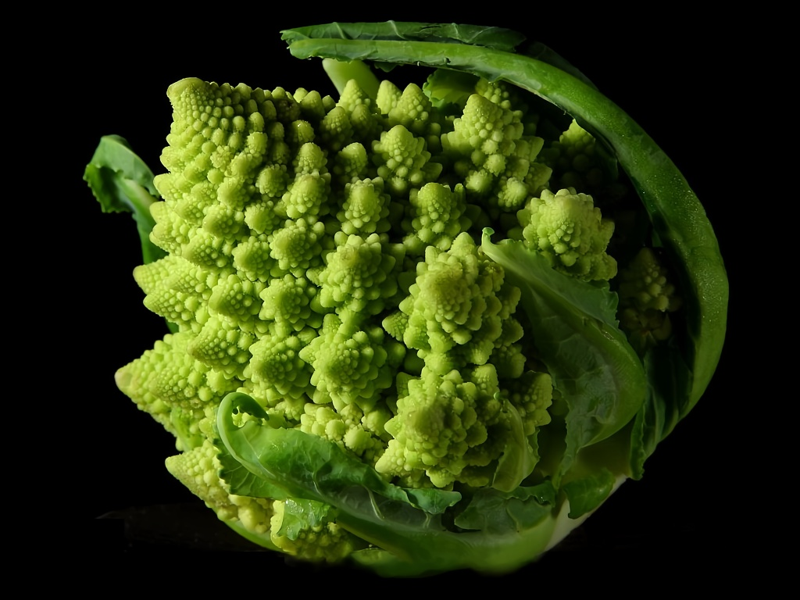
Капуста романеско — настоящий овощ.
Зачёт: Съедобное
Нужно выбрать только «съедобное» или «несъедобное». Название предмета не требуется.

Это куски марсельского и алеппского мыла.
Зачёт: Несъедобное
Нужно выбрать только «съедобное» или «несъедобное». Название предмета не требуется.

Это разрезанная питахайя — драконий фрукт.
Зачёт: Съедобное
Нужно выбрать только «съедобное» или «несъедобное». Название предмета не требуется.
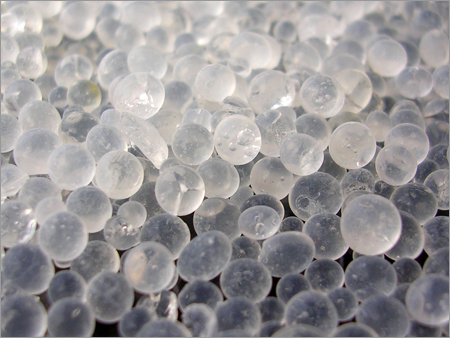
Это силикагель — влагопоглотитель, а не конфеты.
Зачёт: Несъедобное
Нужно выбрать только «съедобное» или «несъедобное». Название предмета не требуется.

В каталоге Оклендского музея предмет описан как фрукт из раскрашенного гипса.
Зачёт: Гипс; Раскрашенный гипс
В Smithsonian хранится именно кожаная пожарная каска.
Зачёт: Кожа; Кожа животного
Пожарные повозки тянули лошади; с ними и была связана работа собак.
Зачёт: Лошадей; Коней
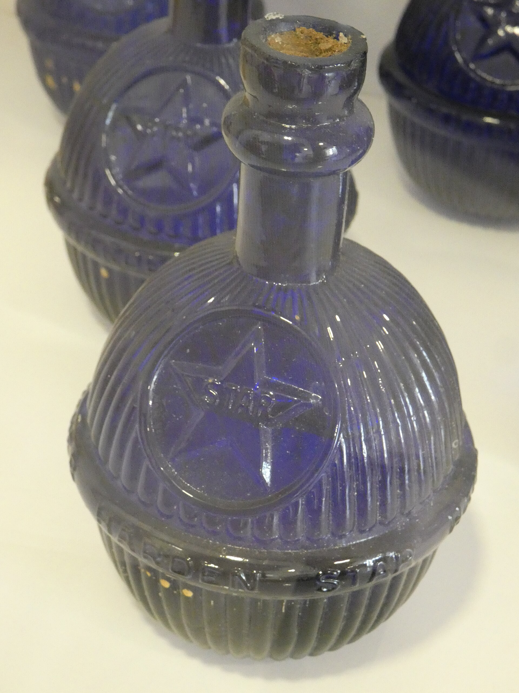
Стеклянный сосуд разбивался и выпускал жидкость для тушения.
Зачёт: Для тушения пожара; Для тушения огня; Огнетушитель; Пожаротушение; Для тушения
Показывать сосуд целиком; точный химический состав не спрашивать.
Инструмент разработал пожарный Хью Халлиган.
Зачёт: Фамилии; Хью Халлигана; Фамилии пожарного
Достаточно ответить: по фамилии создателя. Имя знать не нужно.
Без обычной конвекции пламя в микрогравитации становится примерно сферическим.
Зачёт: Шар; Шарообразную; Сферическую; Сфера; Круглую
Это авторский шуточный пересказ приключений братьев Винчестеров.
Зачёт: Сверхъестественное; Supernatural
Название улицы делает ответ однозначным.
Зачёт: Отчаянные домохозяйки; Desperate Housewives
Елена и братья Сальваторе; это шуточное описание, не цитата.
Зачёт: Дневники вампира; The Vampire Diaries
Кэрри Брэдшоу пишет колонку о личной жизни и отношениях.
Зачёт: Секс в большом городе; Sex and the City
«Самоокупаемость» — шутка, реальный доход героини считать не надо.
Это авторский шуточный пересказ рамочной истории сериала.
Зачёт: Как я встретил вашу маму; How I Met Your Mother; HIMYM
Шнобелевская премия по физике 2017 года: работа о реологии кошек.
Зачёт: Кота; Кошку; Кошек
Исследование отмечено Шнобелевской премией мира 2024 года.
Зачёт: Голубей; Голубь
Шнобелевская премия 2025 года за исследование 2019 года: чёрно-белые полосы уменьшали атаки кусающих мух.
Зачёт: Мухи; От мух; Кусающие мухи; Слепни
Ян Заласевич, Шнобелевская премия по химии и геологии 2023 года.
Зачёт: Камни; Горные породы; Минералы
Джеймс Хиткоут получил Шнобелевскую премию по анатомии 2017 года за работу «Почему у стариков большие уши?».
Зачёт: Уши; Ушные раковины
Это настоящая массовая томатная битва.
Зачёт: Помидоры; Томаты
Cheese Rolling: вниз пускают головку Double Gloucester.
Зачёт: Сыра; Сырной головы; Головки сыра
Марку сыра требовать не нужно.
Это документированная местная традиция в Кастрильо-де-Мурсия.
Зачёт: Младенцев; Малышей; Маленьких детей
Винная битва — реальный праздник в Риохе.
Зачёт: Вином; Красным вином
Чемпионат Air Guitar World Championships проходит в Оулу.
Зачёт: Финляндия; В Финляндии
В условии считать возраст, вес и прочие требования выполненными. Вопрос только о браке, это нужно сказать при споре.

Это грибок для штопки: ткань натягивают на шляпку.
Зачёт: Носки; Носок; Чулки; Чулок; Ткань при штопке
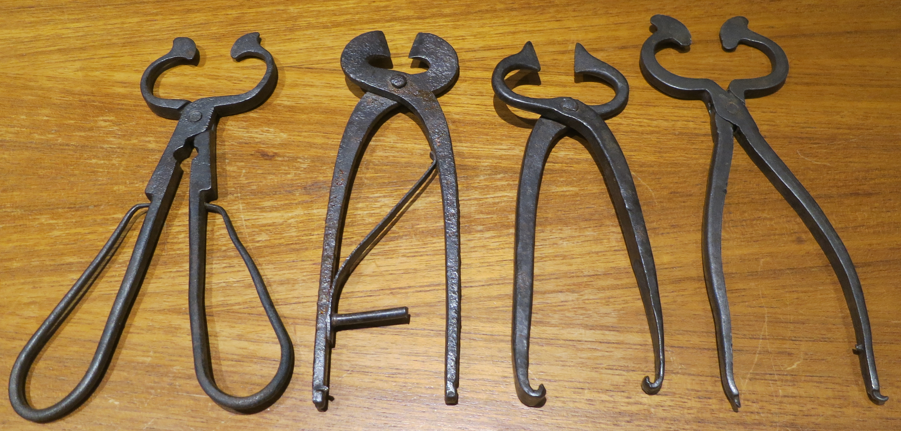
Сахар продавали твёрдыми головами, от которых откусывали куски.
Зачёт: Сахар; Сахарную голову; Кусковой сахар
«Щипцы для сахара» засчитывать; это не современные щипцы для перекладывания кубиков.

Полочка защищает усы, пока человек пьёт.
Зачёт: Усы; Чтобы не намочить усы

Растяжка возвращала форму пальцам тесных перчаток.
Зачёт: Перчатки; Пальцы перчаток

Музейная атрибуция предмета — asparagus tongs.
Зачёт: Спаржи; Спаржа
 ?
?
?
?
?
?
Архивный снимок одноколёсного мотоцикла Goventosa.
Зачёт: Одно колесо; Моноколесо; Моноколёсный мотоцикл
Ответ должен упоминать одно колесо; назвать изобретателя не нужно.
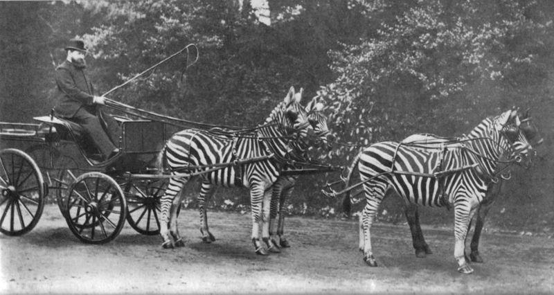
?Уолтер Ротшильд действительно ездил в повозке, запряжённой зебрами.
Зачёт: Зебр; Зебры
Закрыть животных целиком, включая полосатые ноги.
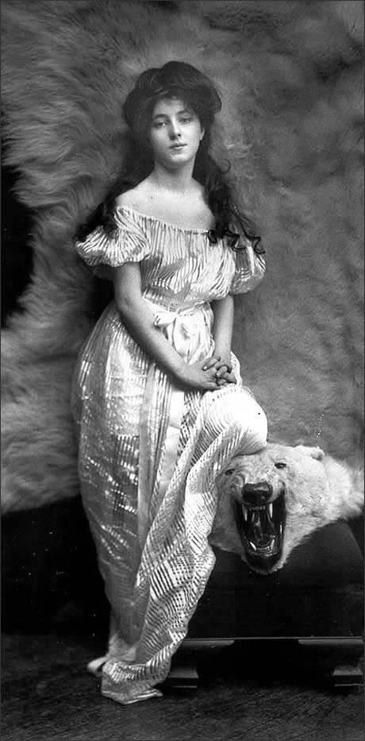
?В студийном портрете Эвелин Несбит видна голова медведя на шкуре.
Зачёт: Медведя; Белого медведя; Медвежья голова
Достаточно «медведь». Не требовать вид животного и не утверждать, что медведь живой.
 ?
?
На снимке Филиппа Халсмана Dalí Atomicus летят три кошки.
Зачёт: Кошки; Коты; Котята
Название работы и количество животных не нужны. Художник виден, но узнавать его для ответа не обязательно.
Британское фортепиано для прикованных к постели людей, архивный снимок 1935 года.
Зачёт: Фортепиано; Пианино; Клавиатуру пианино; Пианино для лежачих
Засчитать «пианино», «фортепиано» и «клавиши музыкального инструмента». Верхняя музейная подпись тоже должна быть закрыта.
Piano voor aan bed gebonden zieken - Piano for the bedridden (4192748677).jpg
Preservatives — вещества, замедляющие порчу продукта.
Зачёт: Консервантов; Пищевых консервантов
Немецкое das Gift — яд.
Зачёт: Яд; Отрава; Токсин
Французское pain означает хлеб.
Зачёт: Хлеб; Батон; Булку
По-итальянски latte — молоко. Кофе с молоком — caffè latte.
Зачёт: Молоко

Подписанный автором снимок Amanita muscaria.
Зачёт: Мухомор; Красный мухомор; Amanita muscaria
Это распознавание выбранного архивного фото, не инструкция для сбора или еды. Латинское название знать не нужно.
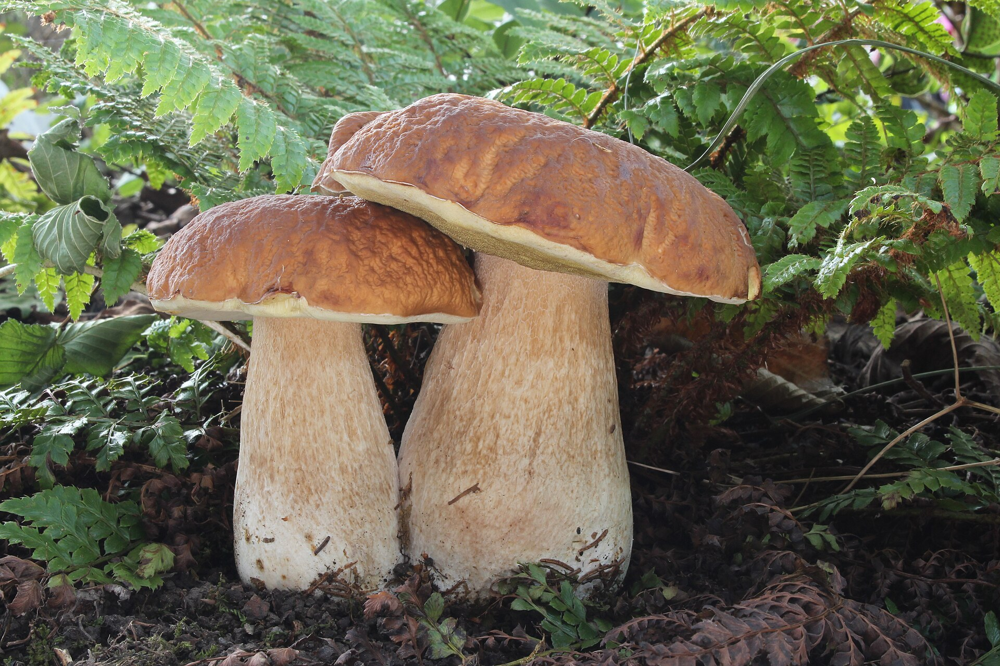
На фото Boletus edulis, белый гриб.
Зачёт: Белый гриб; Боровик; Boletus edulis
Это распознавание выбранного архивного фото, не инструкция для сбора или еды. Латинское название знать не нужно.

В карточке исходного фото указан борщевик Сосновского. Родового названия достаточно.
Зачёт: Борщевик; Борщевик Сосновского; Heracleum sosnowskyi
Это распознавание выбранного архивного фото, не инструкция для сбора или еды. Латинское название знать не нужно.

На фотографии — берёза.
Зачёт: Берёза; Береза
Принимается обычное название; точный вид и латинское название не нужны.
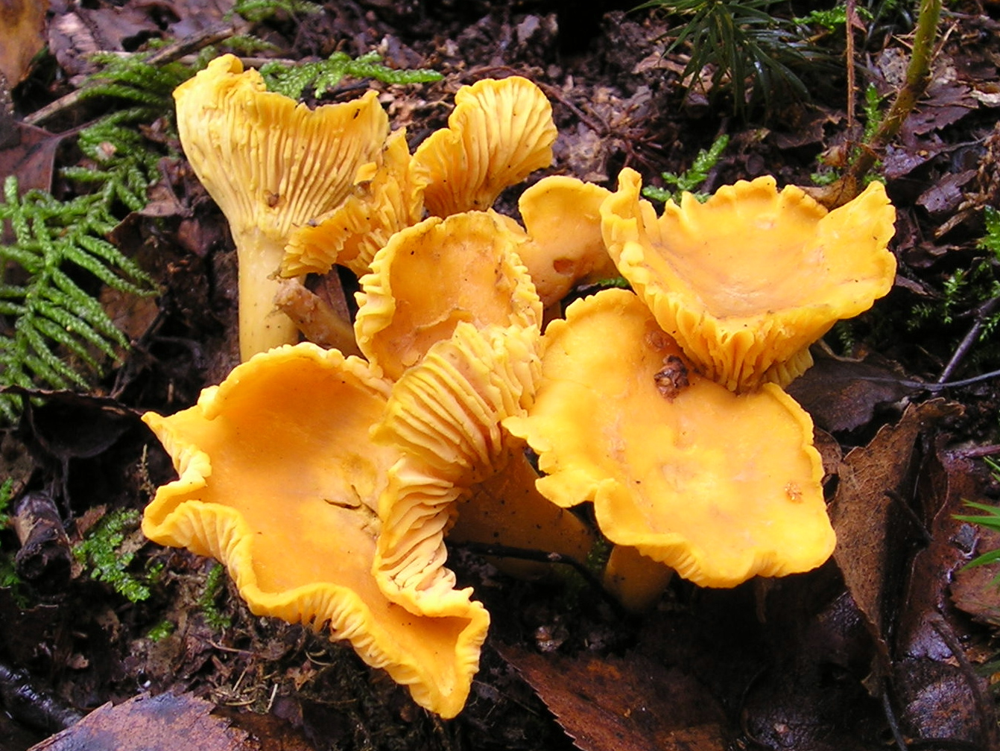
На фотографии — лисичка.
Зачёт: Лисичка; Лисички; Лисичка обыкновенная
Принимается обычное название; точный вид и латинское название не нужны.

Капибара, Hydrochoerus hydrochaeris.
Зачёт: Капибара; Водосвинка
Отвечаем названием животного, не описанием внешности. Подвиды не нужны.
Многие кукушки подбрасывают яйца в гнёзда других птиц.
Зачёт: Кукушка; Обыкновенная кукушка

На фотографии — снегирь.
Зачёт: Снегирь; Обыкновенный снегирь
Принимается обычное название; точный вид и латинское название не нужны.
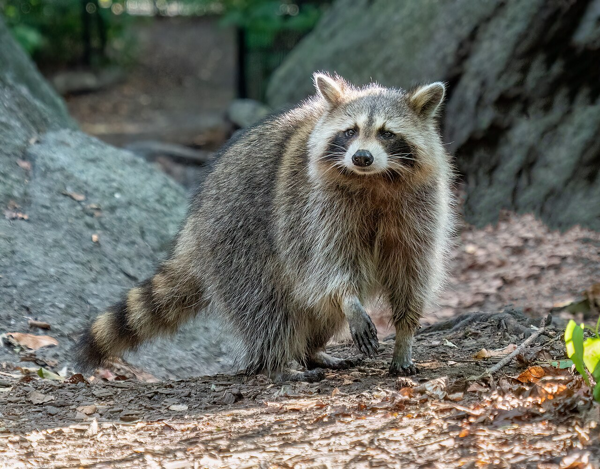
На фотографии — енот.
Зачёт: Енот; Енот-полоскун
Принимается обычное название; точный вид и латинское название не нужны.
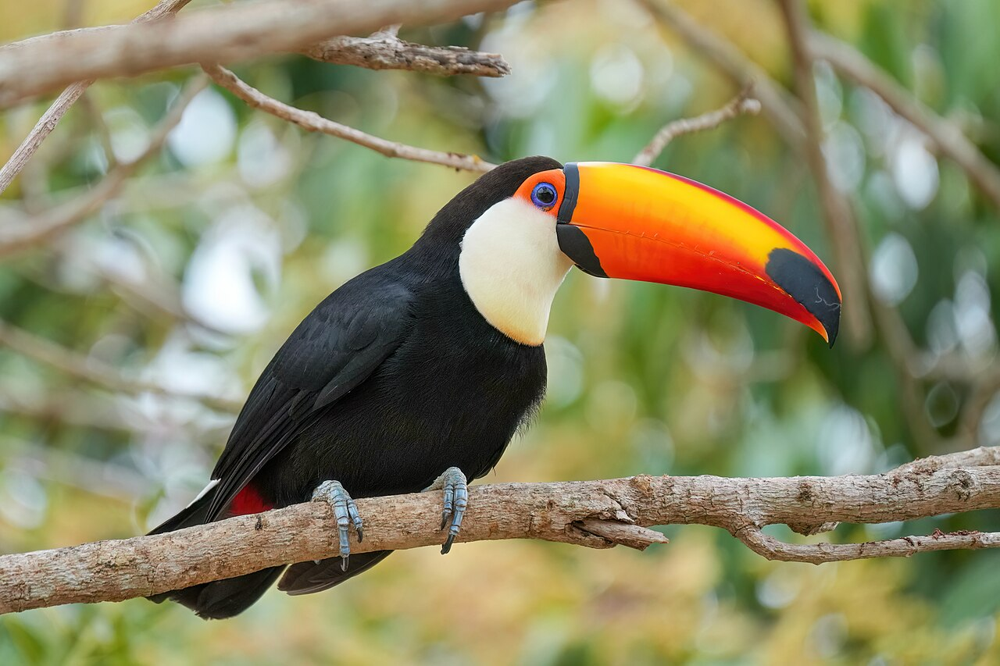
На фотографии — тукан.
Зачёт: Тукан; Большой тукан; Токо
Принимается обычное название; точный вид и латинское название не нужны.
File:006 Toco toucan in Encontro das Águas State Park Photo by Giles Laurent.jpg
У этого занятия есть федерации и соревнования.
Зачёт: Хоббихорсинг; Hobby horsing
Раунды шахмат и бокса чередуются.
Зачёт: Шахматы и бокс; Бокс и шахматы
Подводный хоккей — дисциплина CMAS.
Зачёт: Под водой; В бассейне; На дне бассейна
Игроки меняют скорость и траекторию камня, работая щётками на льду.
Зачёт: Кёрлинг; Керлинг; Curling
Зафиксированы в том числе групповые подводные сеансы глажки.
Зачёт: Гладят; Гладят бельё; Глажка одежды
Государственная энциклопедия Новой Зеландии: подводная глажка
Авторский пересказ; название корабля не произносится.
Зачёт: Титаник; Titanic
Пересказ фильма 1984 года.
Зачёт: Терминатор; The Terminator
Прямой ответ не требует раскрывать финальный сюжетный поворот.
Зачёт: Бойцовский клуб; Fight Club
Речь о первом фильме серии.
Зачёт: Мальчишник в Вегасе; The Hangover
Зелёный взрывающийся моб — крипер.
Зачёт: Крипер; Creeper
Принимается узнаваемое произношение полного названия.
Зачёт: Grand Theft Auto; Гранд Зефт Авто; Гранд Тефт Авто
Принимается любая версия Counter-Strike, включая CS:GO и CS2.
Зачёт: Counter-Strike; Counter Strike; CS; КС; Контр-Страйк; Контра; CS:GO; CS2
Принимается Portal или Portal 2.
Зачёт: Portal; Portal 2; Портал; Портал 2
Короткая публичная реплика стала мемом.
Зачёт: Дурка
Вопрос перенесён сюда из общей сериальной темы.
Зачёт: Сердце Ангела; Сердце ангела
Сергей Grey Wiese анонсировал концерт на 21 мая 2026 года в парижском театре Casino de Paris.
Зачёт: Париж; Paris
Камео в клипе 2019 года указано среди участников видео.
Зачёт: Егор Крид; Крид
Андрей Григорьев-Апполонов выступает под именем All Right. Фамилия не обязательна.
Зачёт: Андрей; Андрей All Right; Андрей Григорьев-Апполонов
Достаточно имени «Андрей».
Нужна идея чернил головоногих; конкретный вид не принципиален.
Зачёт: Чернила каракатицы; Чернила кальмара; Чернила
Попкорн делают из специальных сортов кукурузы.
Зачёт: Кукуруза; Из кукурузы
Красно-розовый цвет даёт свёкла.
Зачёт: Свёкла; Свекла
Кулинарный вопрос для домашней игры
Основные ингредиенты марципана — миндаль и сахар.
Зачёт: Миндаль
Для ткемали используют кислые сливы, в том числе алычу.
Зачёт: Слива; Из сливы; Алыча; Из алычи
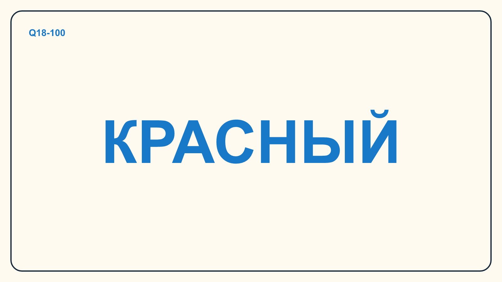
Слово «КРАСНЫЙ» нарисовано синим.
Зачёт: Синим; Синий; Голубым
Авторская задача, составленная для этой викторины
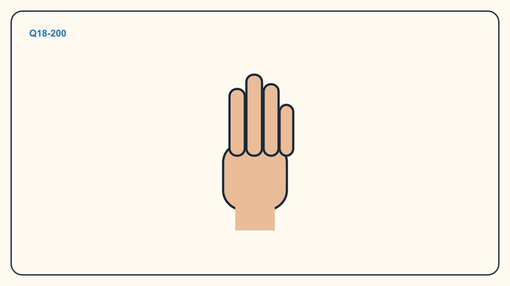
Слева от указательного отсутствует большой палец.
Зачёт: Большого; Большой палец
Авторская задача, составленная для этой викторины

Синие кружки стоят в четырёх углах и в центре.
Зачёт: Пять; 5
Авторская задача, составленная для этой викторины
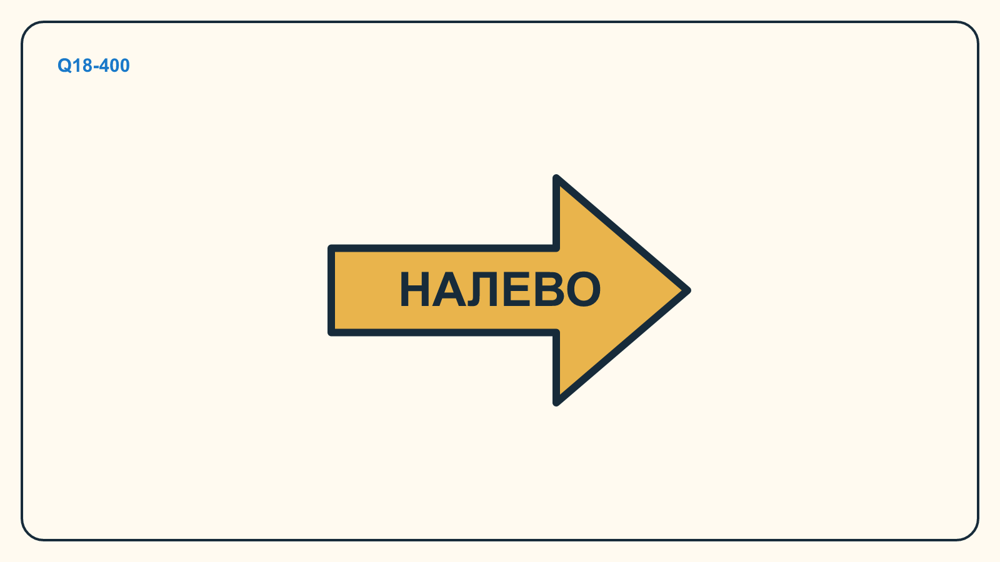
Стрелка указывает вправо, хотя на ней написано «НАЛЕВО».
Зачёт: Вправо; Направо
Авторская задача, составленная для этой викторины

Между средним и мизинцем оставлено место безымянного.
Зачёт: Безымянного; Безымянный палец
Авторская задача, составленная для этой викторины

СТО + Л = СТОЛ.
Зачёт: Стол
Картинка создана для этого пакета. Reddit использован для исследования фонетических и пространственных механик, а не как источник готового русского задания.
Авторская задача, составленная для этой викторины
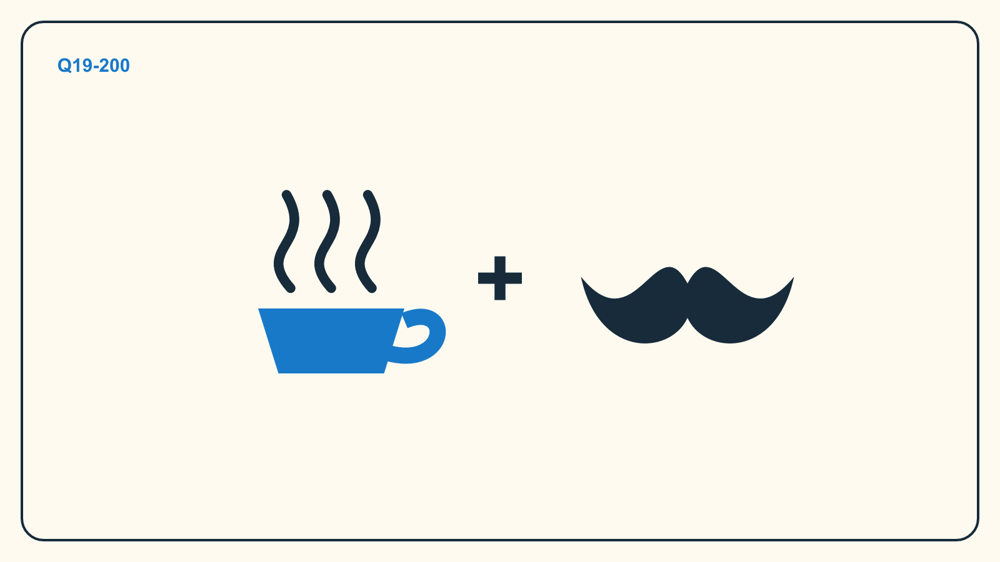
ПАР + УС = ПАРУС. На первой картинке нужен пар над чашкой.
Зачёт: Парус
Картинка создана для этого пакета. Reddit использован для исследования фонетических и пространственных механик, а не как источник готового русского задания.
Авторская задача, составленная для этой викторины

ШКА находится ПОД буквой У: ПОД + У + ШКА.
Зачёт: Подушка
Картинка создана для этого пакета. Reddit использован для исследования фонетических и пространственных механик, а не как источник готового русского задания.
Авторская задача, составленная для этой викторины
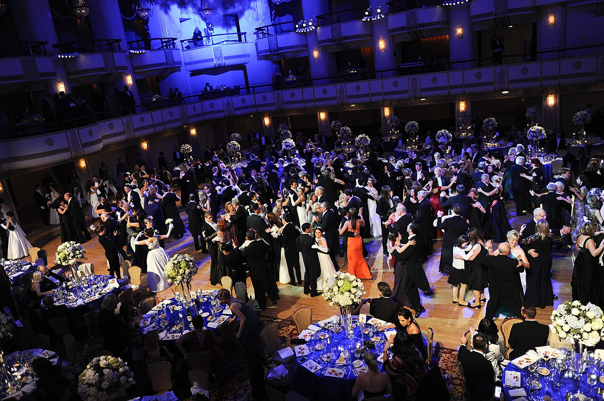
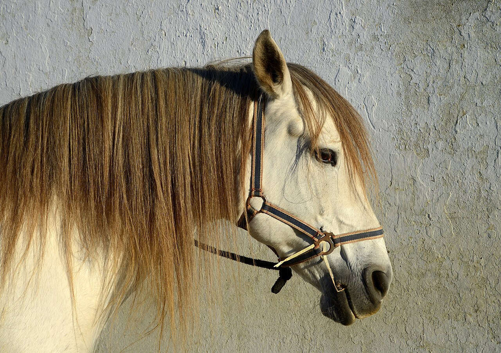
БАЛ + КОНЬ без последней буквы: БАЛКОН.
Зачёт: Балкон
Картинка создана для этого пакета. Reddit использован для исследования фонетических и пространственных механик, а не как источник готового русского задания.
File:Viennese Opera Ball New York 2017 .jpg
File:Horse December 2014-1.jpg
Авторская задача, составленная для этой викторины
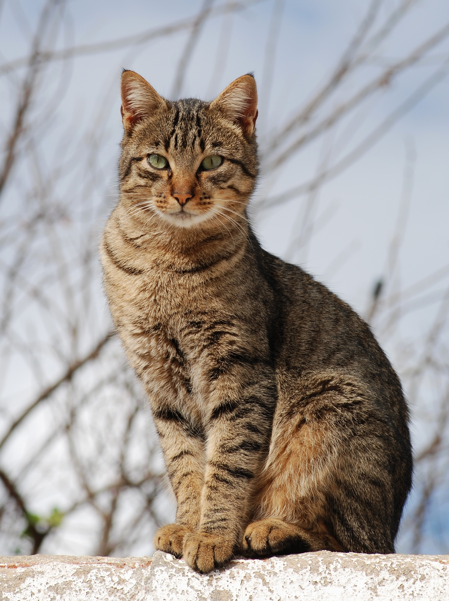

КОТ + ЛЕТО; в слове ЛЕТО заменяем О на А: КОТЛЕТА.
Зачёт: Котлета
Картинка создана для этого пакета. Reddit использован для исследования фонетических и пространственных механик, а не как источник готового русского задания.
File:Shelly Beach in Summer 2022.jpg
Авторская задача, составленная для этой викторины
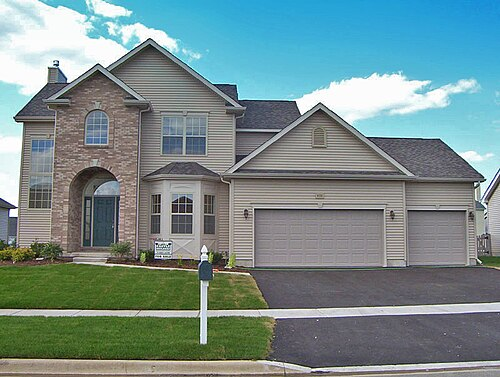
Один человек + дом.
Зачёт: Один дома; Home Alone
Авторская иллюстрация. Угадываем название, а не конкретную часть франшизы.
File:Big single-family home 2.jpg
Авторская задача, составленная для этой викторины
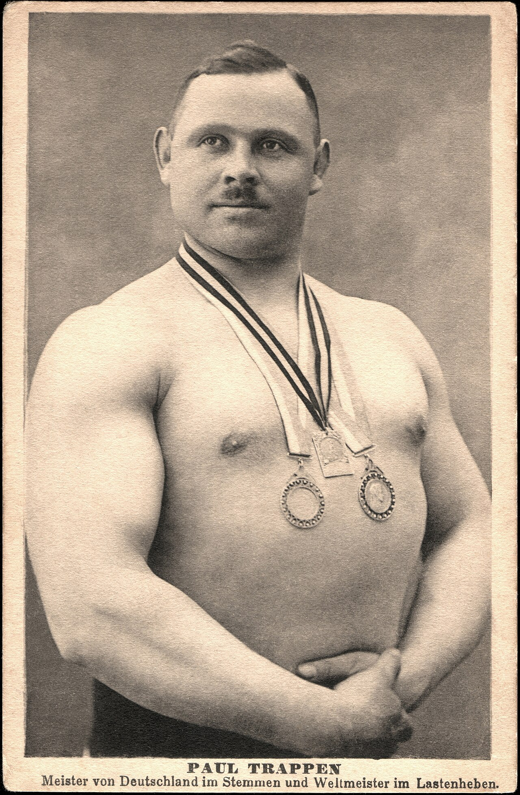

Человек + паук.
Зачёт: Человек-паук; Спайдермен; Spider-Man
Авторская иллюстрация. Угадываем название, а не конкретную часть франшизы.
File:Portrait of Paul Trappen.jpg
File:Araneus diadematus MHNT Femelle Fronton.jpg
Авторская задача, составленная для этой викторины


Отключённый звук + ягнята.
Зачёт: Молчание ягнят; The Silence of the Lambs
Авторская иллюстрация. Угадываем название, а не конкретную часть франшизы.
File:Eduardo Borges - Brazil.jpg
Авторская задача, составленная для этой викторины


Ночной город + музей: «Ночь в музее».
Зачёт: Ночь в музее; Night at the Museum
Авторская иллюстрация. Угадываем название, а не конкретную часть франшизы.
File:Dubai Night Time (Pexels-804915).jpg
File:Natural History Museum Hintze Hall.jpg
Авторская задача, составленная для этой викторины

Человек + дождь.
Зачёт: Человек дождя; Rain Man
Авторская иллюстрация. Угадываем название, а не конкретную часть франшизы.
File:Portrait of Paul Trappen.jpg
Авторская задача, составленная для этой викторины
Бриф описывает задачу и исходные условия проекта.
Зачёт: Бриф
Авторские вопросы: определения, арифметика и общеизвестные факты
Слоган — краткая рекламная формулировка.
Зачёт: Слоган
Авторские вопросы: определения, арифметика и общеизвестные факты
Реклама возвращается к аудитории, уже взаимодействовавшей с брендом.
Зачёт: Ретаргетинг; Ремаркетинг
Авторские вопросы: определения, арифметика и общеизвестные факты
25 ÷ 1000 × 100 = 2,5%.
Зачёт: 2,5%; 2.5%; 2,5; 2.5
Авторские вопросы: определения, арифметика и общеизвестные факты
При A/B-тестировании сравнивают варианты на сопоставимых группах.
Зачёт: A/B-тест; А/Б-тест; Сплит-тест
Авторские вопросы: определения, арифметика и общеизвестные факты
Protein — английское название белков.
Зачёт: Белки
Йод используют для качественной реакции на крахмал.
Зачёт: Крахмал
Авторские вопросы: определения, арифметика и общеизвестные факты
Лактоза — углевод молока.
Зачёт: Лактоза; Молочный сахар
Авторские вопросы: определения, арифметика и общеизвестные факты
Белки состоят из цепочек аминокислот.
Зачёт: Аминокислоты
Авторские вопросы: определения, арифметика и общеизвестные факты
(10 + 20) × 4 = 120.
Зачёт: 120 ккал; 120
Праздник отмечается 23 февраля.
Зачёт: 23 февраля; 23
Министерство обороны Республики Беларусь — официальные публикации
Печи — военный городок в Борисове.
Зачёт: Борисов; Барысаў
72-й гвардейский объединённый учебный центр — официальные публикации
Принятие Военной присяги — отдельная торжественная церемония.
Зачёт: Военная присяга; Присяга
72-й гвардейский объединённый учебный центр — официальные публикации
Бригаде присвоено наименование «Витебская».
Зачёт: Витебск; Віцебск
Придвинье — присвоение бригадам наименований Витебская и Брестская
Порядок этих званий: майор, подполковник, полковник.
Зачёт: Подполковник
Обороты показывает тахометр.
Зачёт: Спидометр
Авторские вопросы: определения, арифметика и общеизвестные факты
R — reverse.
Зачёт: Задний ход; Реверс; Reverse
Авторские вопросы: определения, арифметика и общеизвестные факты
Наружное колесо проходит более длинный путь, поэтому скорости колёс различаются.
Зачёт: Дифференциал
Авторские вопросы: определения, арифметика и общеизвестные факты
Число указывает диаметр обода, на который устанавливается шина.
Зачёт: Посадочный диаметр диска; Диаметр диска; Диаметр обода
Авторские вопросы: определения, арифметика и общеизвестные факты
Выпуск удаляет отработавшие газы из цилиндра.
Зачёт: Выпуск; Выхлоп
Авторские вопросы: определения, арифметика и общеизвестные факты
Масляный фильтр задерживает загрязнения в системе смазки.
Зачёт: Масляный фильтр
Авторские вопросы: определения, арифметика и общеизвестные факты
Свеча воспламеняет топливовоздушную смесь искрой.
Зачёт: Свеча зажигания; Свеча
Авторские вопросы: определения, арифметика и общеизвестные факты
Этот фильтр очищает воздух, который поступает в салон.
Зачёт: Салонный фильтр; Фильтр салона; Фильтр вентиляции салона
Повреждённый пыльник перестаёт защищать шарнир.
Зачёт: Пыльник; Пыльник ШРУСа
Авторские вопросы: определения, арифметика и общеизвестные факты
Лямбда-зонд измеряет содержание кислорода в отработавших газах.
Зачёт: Лямбда-зонд; Лямбда зонд
Авторские вопросы: определения, арифметика и общеизвестные факты
Это стороны бухгалтерского счёта.
Зачёт: Дебет и кредит; Кредит и дебет
Авторские вопросы: определения, арифметика и общеизвестные факты
Фактическое наличие сопоставляют с учётными данными.
Зачёт: Инвентаризация
Авторские вопросы: определения, арифметика и общеизвестные факты
Дебитор — тот, кто должен организации.
Зачёт: Дебиторская; Дебиторская задолженность
Авторские вопросы: определения, арифметика и общеизвестные факты
Амортизация распределяет амортизируемую стоимость актива по периодам его использования.
Зачёт: Амортизация
Авторские вопросы: определения, арифметика и общеизвестные факты
1000 − 600 − 250 = 150.
Зачёт: Прибыль 150 рублей; 150; 150 рублей
Авторские вопросы: определения, арифметика и общеизвестные факты
Пустышка предназначена для сосания без кормления.
Зачёт: Пустышка; Соска; Соска-пустышка
Авторские вопросы: определения, арифметика и общеизвестные факты
Слинг — тканевая переноска для ребёнка.
Зачёт: Слинг; Слинг-шарф; Май-слинг
Авторские вопросы: определения, арифметика и общеизвестные факты
Молозиво вырабатывается в первые дни после родов.
Зачёт: Молозиво; Colostrum
Кости черепа в этой области ещё не срослись.
Зачёт: Родничок; Фонтанелла
Ладонный хватательный рефлекс — автоматическое сжатие пальцев.
Зачёт: Хватательный рефлекс; Ладонный хватательный рефлекс; Рефлекс Робинсона
Эти механики относятся к Monopoly.
Зачёт: Монополия; Monopoly
Авторские вопросы: определения, арифметика и общеизвестные факты
Jenga — игра с башней из брусков.
Зачёт: Дженга; Jenga
Авторские вопросы: определения, арифметика и общеизвестные факты
При мате партия заканчивается.
Зачёт: Мат
Авторские вопросы: определения, арифметика и общеизвестные факты
В русских правилах сказано «квадрат местности». Игроки также называют его тайлом или плиткой.
Зачёт: Квадрат местности; Тайл; Плитка; Тайлик; Квадрат
Утроение сектора 20 даёт 60, больше чем центр с 50 очками.
Зачёт: 60; Шестьдесят
Авторские вопросы: определения, арифметика и общеизвестные факты
Vice City — город в Леониде.
Зачёт: Вайс-Сити; Vice City
Главная героиня — Lucia Caminos.
Зачёт: Люсия; Лусия; Lucia; Люсия Каминос
Его полное имя — Jason Duval.
Зачёт: Джейсон; Jason; Джейсон Дюваль
Официальные материалы Rockstar называют штат Leonida.
Зачёт: Леонида; Leonida
Вымышленная Леонида основана на Флориде.
Зачёт: Флорида; Штат Флорида
Мюзикл собран из песен ABBA и назван по их песне Mamma Mia.
Зачёт: ABBA; Абба
Авторские вопросы: определения, арифметика и общеизвестные факты
Песню написал Фредди Меркьюри.
Зачёт: Queen; Куин
Авторские вопросы: определения, арифметика и общеизвестные факты
Виктор Цой был автором песен и фронтменом группы «Кино».
Зачёт: Кино
Авторские вопросы: определения, арифметика и общеизвестные факты
Французский электронный дуэт — Тома Бангальтер и Ги-Мануэль де Омем-Кристо.
Зачёт: Daft Punk; Дафт Панк
Авторские вопросы: определения, арифметика и общеизвестные факты
Призма изображена на обложке альбома 1973 года.
Зачёт: The Dark Side of the Moon; Dark Side of the Moon; Тёмная сторона Луны
Авторские вопросы: определения, арифметика и общеизвестные факты
У куба шесть квадратных граней.
Зачёт: Шесть; 6
Авторские вопросы: определения, арифметика и общеизвестные факты
Символ происходит от латинского aurum.
Зачёт: Золото
Авторские вопросы: определения, арифметика и общеизвестные факты
В евклидовой геометрии сумма равна 180°.
Зачёт: 180; 180 градусов
Авторские вопросы: определения, арифметика и общеизвестные факты
Герц равен одной обратной секунде.
Зачёт: Герц; Гц; Hz
Авторские вопросы: определения, арифметика и общеизвестные факты
Гугол — 10 в сотой степени.
Зачёт: Гугол; Googol
Авторские вопросы: определения, арифметика и общеизвестные факты
Ты занял его место, а не место лидера.
Зачёт: Вторым; Второй; 2
Авторские вопросы: определения, арифметика и общеизвестные факты
Пять сестёр и их общий брат.
Зачёт: Шесть; 6
Авторские вопросы: определения, арифметика и общеизвестные факты
Спрашивается, сколько ты взял, а не сколько осталось.
Зачёт: Два; 2
Авторские вопросы: определения, арифметика и общеизвестные факты
Средний одновременно является сыном и отцом.
Зачёт: Дед, отец и сын; Дедушка, папа и внук
Авторские вопросы: определения, арифметика и общеизвестные факты
Каждый станок делает одну деталь за пять минут.
Зачёт: Пять минут; 5; 5 минут
Авторские вопросы: определения, арифметика и общеизвестные факты
Поплавок служит сигнализатором поклёвки.
Зачёт: Поплавок
Авторские вопросы: определения, арифметика и общеизвестные факты
Блесна — металлическая искусственная приманка.
Зачёт: Блесна
Авторские вопросы: определения, арифметика и общеизвестные факты
Газовый пузырь помогает регулировать плавучесть.
Зачёт: Плавательный пузырь; Плавательный
Для некоторых видов возраст определяют по кольцам на чешуе.
Зачёт: На чешуе; Чешуя; На чешуйках
У щуки вытянутое тело и широкая, уплощённая морда.
Зачёт: Щука; Обыкновенная щука
Сладкая вата — тонкие нити сахара.
Зачёт: Сахар
Авторские вопросы: определения, арифметика и общеизвестные факты
При нагреве водяной пар повышает давление внутри зерна.
Зачёт: Вода; Влага
Ваниль — лиана из семейства орхидных.
Зачёт: Орхидные; Орхидея; Орхидеи
Мука в смазанной форме помогает готовому коржу отойти от стенок и дна.
Зачёт: Чтобы выпечка не прилипла; Чтобы легче вынуть корж; Чтобы не прилипло к форме
Шафран — пряность из рылец Crocus sativus; ваниль называют второй по дороговизне пряностью.
Зачёт: Шафран; Saffron
Пуповина соединяет плод с плацентой.
Зачёт: Пуповина
Авторские вопросы: определения, арифметика и общеизвестные факты
Верникс — первородная смазка, защищающая кожу ребёнка.
Зачёт: Верникс; Первородная смазка; Vernix
Шкала Апгар оценивает пять признаков, каждый от 0 до 2 баллов.
Зачёт: 10; Десять
Латинское placenta связано с плоской лепёшкой; название описывает форму органа.
Зачёт: Плацента; Детское место
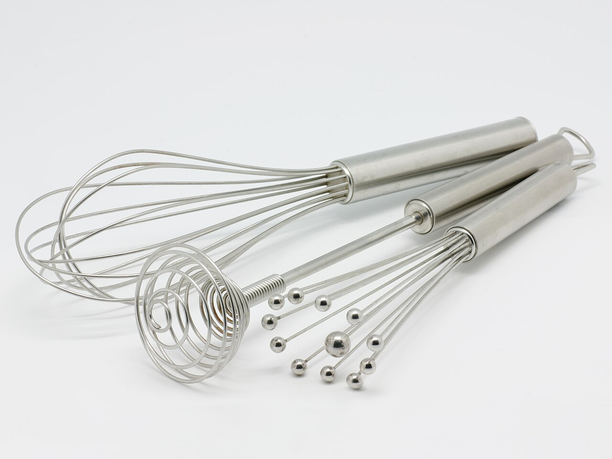
Им взбивают и перемешивают.
Зачёт: Венчик; Кухонный венчик
Зачёт по указанным вариантам. Название файла участникам не показывается.
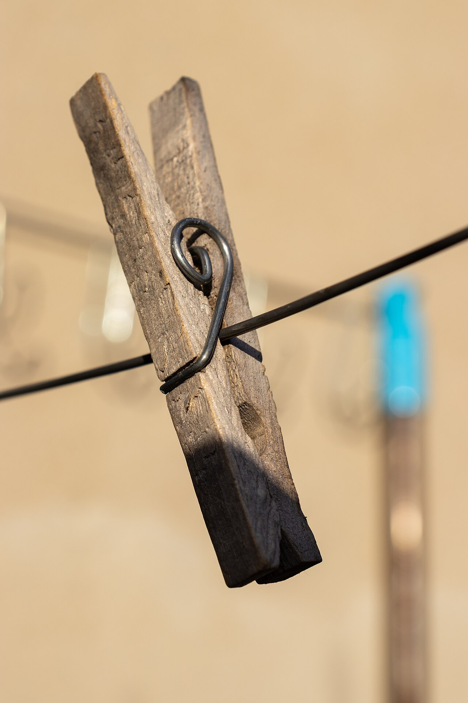
Ею закрепляют бельё на верёвке.
Зачёт: Прищепка; Бельевая прищепка
Зачёт по указанным вариантам. Название файла участникам не показывается.
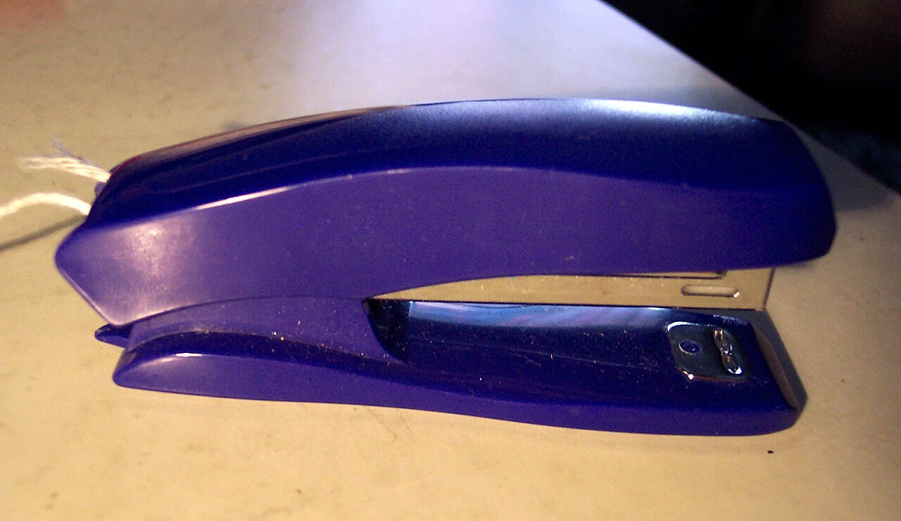
Он скрепляет листы металлическими скобами.
Зачёт: Степлер; Скобосшиватель
Зачёт по указанным вариантам. Название файла участникам не показывается.
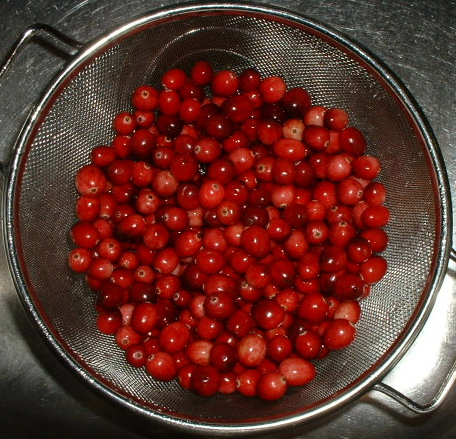
Посуда с отверстиями для отделения жидкости.
Зачёт: Дуршлаг
Зачёт по указанным вариантам. Название файла участникам не показывается.
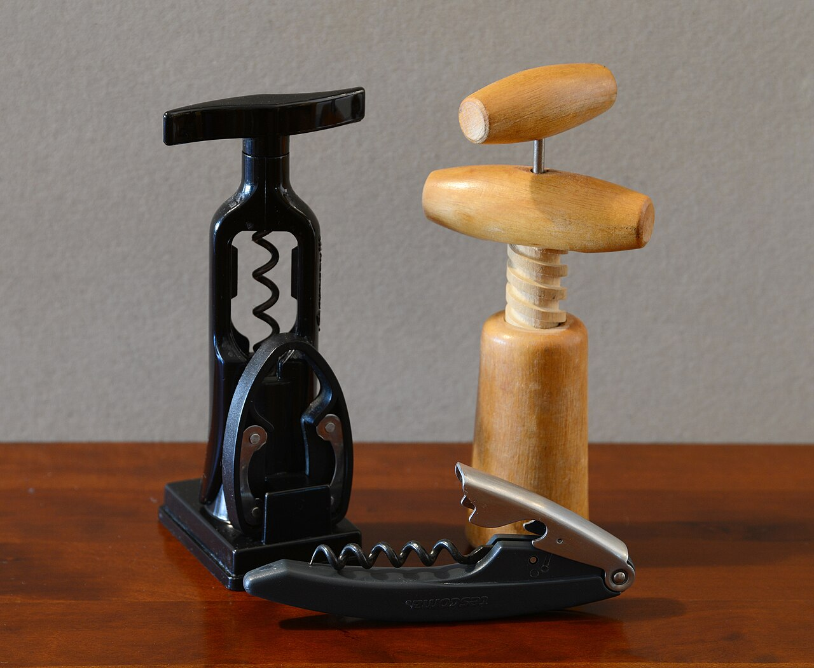
Инструмент для извлечения пробки.
Зачёт: Штопор
Зачёт по указанным вариантам. Название файла участникам не показывается.
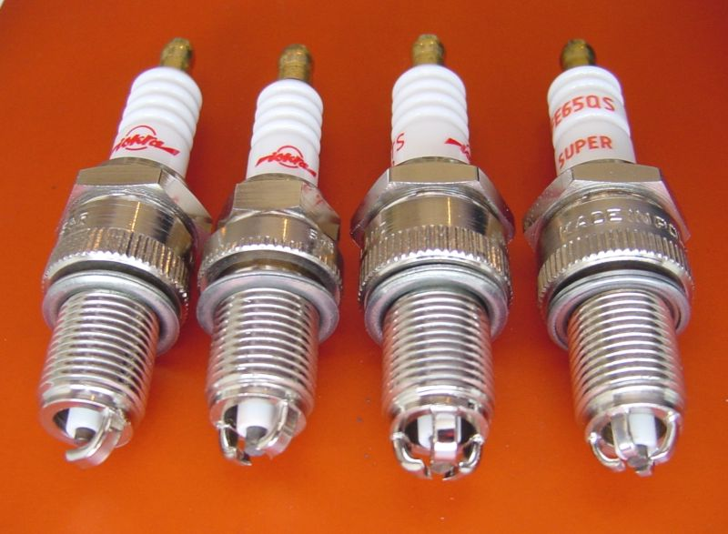
Создаёт искру в бензиновом двигателе.
Зачёт: Свеча зажигания; Свеча
Зачёт по указанным вариантам. Название файла участникам не показывается.
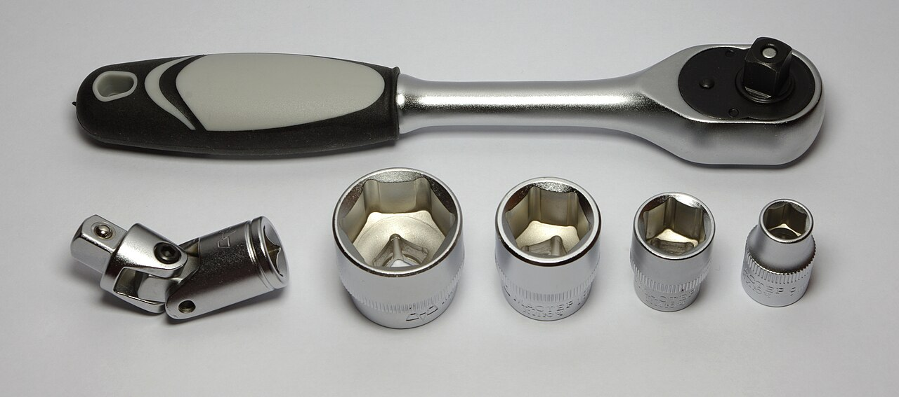
Храповой механизм позволяет переставлять рукоятку без снятия головки.
Зачёт: Трещотка; Трещоточный ключ; Торцевой ключ с трещоткой
Зачёт по указанным вариантам. Название файла участникам не показывается.

Шарики уменьшают трение между кольцами.
Зачёт: Шариковый подшипник; Подшипник
Зачёт по указанным вариантам. Название файла участникам не показывается.

Измеряет наружные и внутренние размеры, а также глубину.
Зачёт: Штангенциркуль
Зачёт по указанным вариантам. Название файла участникам не показывается.

Инструмент для затяжки с контролем крутящего момента.
Зачёт: Динамометрический ключ
Зачёт по указанным вариантам. Название файла участникам не показывается.

Меховой клавишно-пневматический инструмент с фортепианной клавиатурой.
Зачёт: Аккордеон
Зачёт по указанным вариантам. Название файла участникам не показывается.
У рояля струны расположены горизонтально, а большая крышка поднимается над корпусом.
Зачёт: Рояль; Концертный рояль
Губная гармошка звучит, когда воздух проходит через её язычки.
Зачёт: Губная гармошка; Гармоника; Гармошка
Бонго — пара соединённых барабанов разного размера. Кастаньеты держат в руках.
Зачёт: Бонго
Для традиционных смычков используют волос из конского хвоста.
Зачёт: Из конского волоса; Лошади; Коня; Кобылы; Конский волос; Из хвоста лошади

Магнитная лента в небольшом корпусе.
Зачёт: Аудиокассета; Кассета; Компакт-кассета
Зачёт по указанным вариантам. Название файла участникам не показывается.

Номер набирают поворотом диска.
Зачёт: Дисковый телефон; Телефон; Роторный телефон
Зачёт по указанным вариантам. Название файла участникам не показывается.
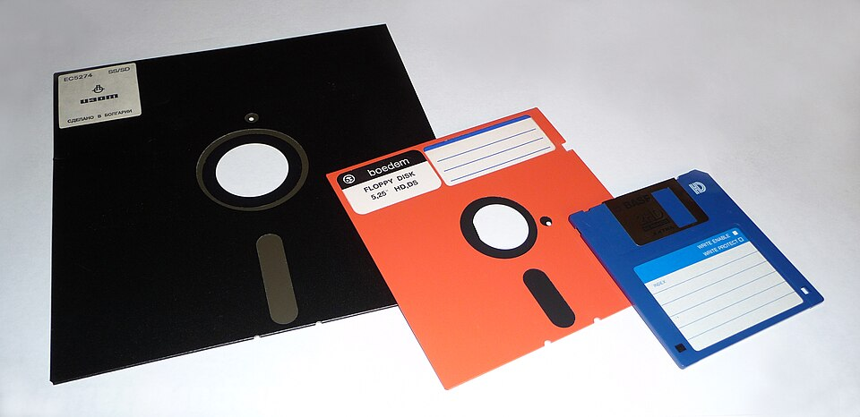
Съёмный магнитный носитель данных.
Зачёт: Дискета; Гибкий диск
Зачёт по указанным вариантам. Название файла участникам не показывается.

Механическое устройство для печати на бумаге.
Зачёт: Пишущая машинка; Печатная машинка
Зачёт по указанным вариантам. Название файла участникам не показывается.
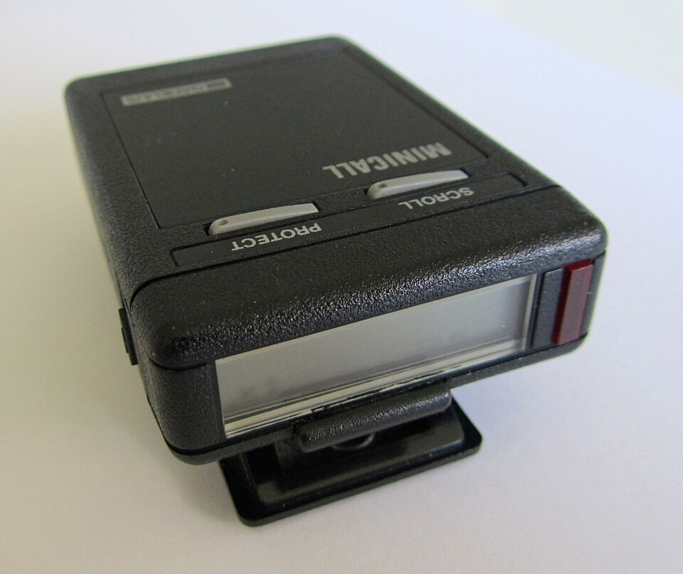
Небольшое устройство для приёма коротких сообщений.
Зачёт: Пейджер; Pager
Зачёт по указанным вариантам. Название файла участникам не показывается.
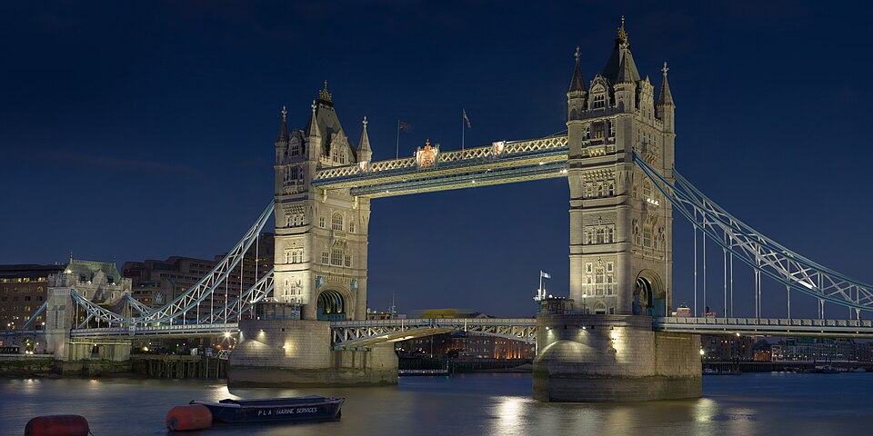
Разводной мост через Темзу в Лондоне.
Зачёт: Тауэрский мост; Лондон; Tower Bridge
Зачёт по указанным вариантам. Название файла участникам не показывается.

Подвесной мост через пролив Золотые Ворота.
Зачёт: Золотые Ворота; Сан-Франциско; Golden Gate
Зачёт по указанным вариантам. Название файла участникам не показывается.

Каменный мост через Гранд-канал в Венеции.
Зачёт: Риальто; Венеция; Rialto
Зачёт по указанным вариантам. Название файла участникам не показывается.
Арочный мост через Сиднейскую гавань.
Зачёт: Харбор-Бридж; Сидней; Sydney Harbour Bridge
Зачёт по указанным вариантам. Название файла участникам не показывается.

Исторический мост через Влтаву в Праге.
Зачёт: Карлов мост; Прага; Charles Bridge
Зачёт по указанным вариантам. Название файла участникам не показывается.
На фото — Леонардо Ди Каприо.
Зачёт: Леонардо Ди Каприо; Леонардо ДиКаприо; Ди Каприо; ДиКаприо; Leonardo DiCaprio
Зачёт по указанным вариантам. Название файла участникам не показывается.
На фото — Киану Ривз.
Зачёт: Киану Ривз; Keanu Reeves; Ривз
Зачёт по указанным вариантам. Название файла участникам не показывается.
File:Reunião com o ator norte-americano Keanu Reeves (46806576944) (cropped).jpg
На фото — Роберт Дауни — младший.
Зачёт: Роберт Дауни — младший; Роберт Дауни; Дауни; Robert Downey Jr.
Зачёт по указанным вариантам. Название файла участникам не показывается.
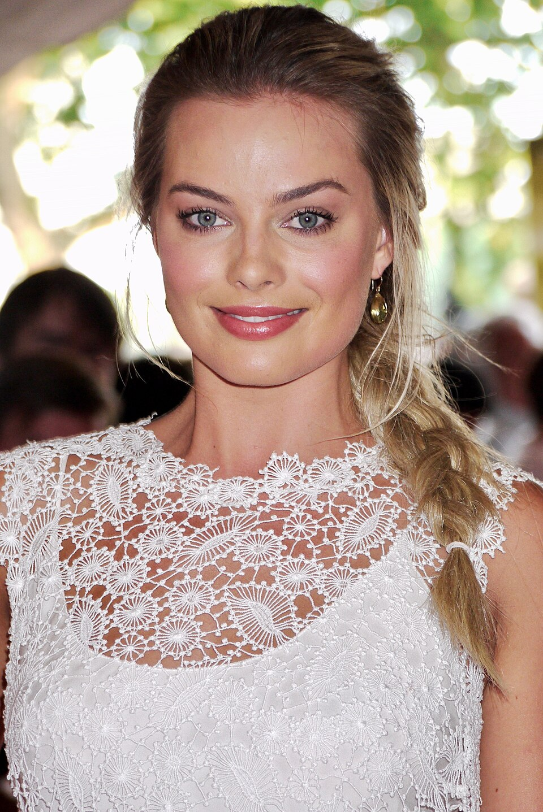
На фото — Марго Робби.
Зачёт: Марго Робби; Margot Robbie; Робби
Зачёт по указанным вариантам. Название файла участникам не показывается.

На фото — Райан Гослинг.
Зачёт: Райан Гослинг; Ryan Gosling; Гослинг
Зачёт по указанным вариантам. Название файла участникам не показывается.
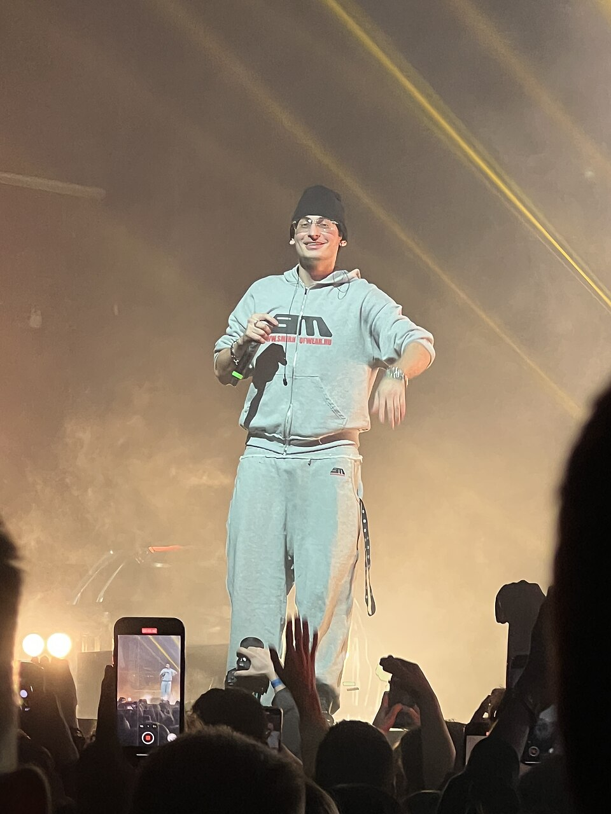
На фото — BUSHIDO ZHO.
Зачёт: BUSHIDO ZHO; Бушидо Жо; Бушидо
Зачёт по указанным вариантам. Название файла участникам не показывается.
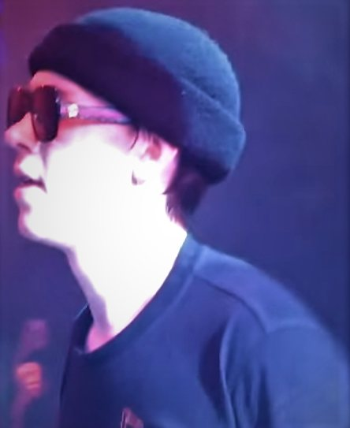
Трек входит в альбом Dragonborn.
Зачёт: Big Baby Tape; Биг Бейби Тейп; Биг Бэйби Тэйп; Тейп; Егор Ракитин

На фото — madk1d.
Зачёт: madk1d; Мэдкид; Мадкид; madkid
Зачёт по указанным вариантам. Название файла участникам не показывается.

На фото — Тёмный Принц.
Зачёт: Тёмный Принц; Темный Принц; Тёмный принц
Зачёт по указанным вариантам. Название файла участникам не показывается.

На фото — Whole Lotta Swag.
Зачёт: Whole Lotta Swag; Хоул Лотта Сваг; Хоул Лотта Свэг; Вол Лотта Сваг
Зачёт по указанным вариантам. Название файла участникам не показывается.
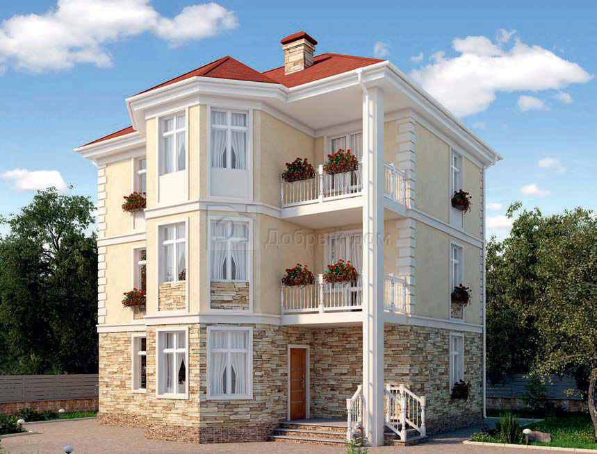
Три надземных этажа, включая первый.
Зачёт: 3 этажа; 3; Три
Ответ задан пользователем по имени исходного файла. Считаем надземные этажи, включая первый; крышу не считаем.
Дом A, материал пользователя

Пять надземных этажей, включая первый.
Зачёт: 5 этажей; 5; Пять
Ответ задан пользователем по имени исходного файла. Считаем надземные этажи, включая первый; крышу не считаем.
Дом B, материал пользователя
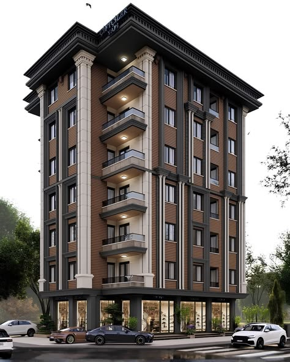
Семь надземных этажей, включая первый.
Зачёт: 7 этажей; 7; Семь
Ответ задан пользователем по имени исходного файла. Считаем надземные этажи, включая первый; крышу не считаем.
Дом C, материал пользователя

Слева видно восемь верхних уровней и один нижний уровень на высоте входа: 8 + 1 = 9.
Зачёт: 9 этажей; 9; Девять
Считать по левому краю фасада, включая нижний ряд на уровне входа.
Дом D, материал пользователя
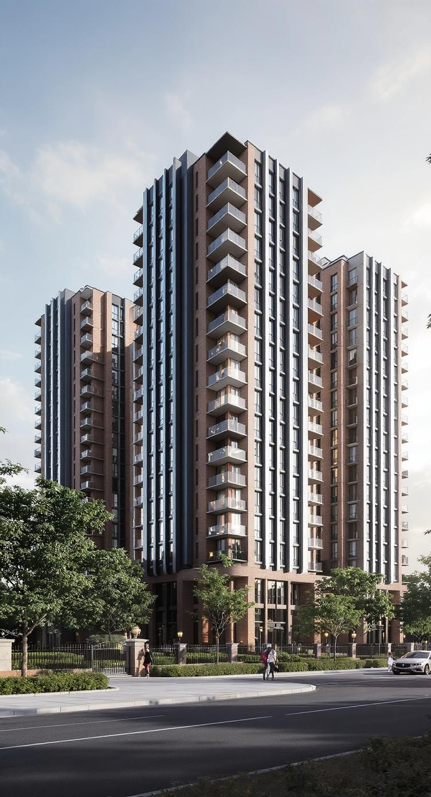
Считаем всю центральную секцию от уровня входа до верхнего ряда окон под крышей. Всего 18 этажей.
Зачёт: 18 этажей; 18; Восемнадцать
Показывать центральную секцию. Основание входит в счёт, крышу не считаем.
Дом E, материал пользователя
Буквы обозначают энергетическую ценность и три основных макронутриента.
Зачёт: Калории, белки, жиры, углеводы; Калорийность, белки, жиры, углеводы
Для стандартного расчёта используют коэффициент 9 ккал на грамм жиров.
Зачёт: 9 ккал; 9; Девять
25 × 40 / 100 = 10. Калькулятор может идти отдыхать.
Зачёт: 10 г; 10; Десять
20 × 4 + 8 × 9 + 3 × 4 = 164.
Зачёт: 164 ккал; 164
250 × 0,6 = 150. Надпись «фитнес» на арифметику не влияет.
Зачёт: 150 ккал; 150
Это растительный настой, а не сорт чайного куста.
Зачёт: Каркаде
Тапиоковый крахмал получают из корней маниока.
Зачёт: Тапиока; Крахмал маниока
Растворённый CO₂ выходит пузырьками.
Зачёт: Углекислый газ; CO2; Диоксид углерода
Бомбилья — трубочка с фильтром.
Зачёт: Мате; Йерба мате
Напиток делают из оболочек кофейных ягод, а не из обжаренных зёрен.
Зачёт: Кофейного дерева; Кофе
Он подаёт электричество на нагреватель.
Зачёт: Аккумулятор; Батарея; Батарейка
Наличие ароматизатора не меняет свойства никотина.
Зачёт: Никотин
В воздухе находятся мелкие частицы и капли. Это не просто водяной пар.
Зачёт: Аэрозоль; Это аэрозоль
VG — vegetable glycerin, растительный глицерин.
Зачёт: Глицерин; Растительный глицерин
В устройстве нагревательный элемент нагревает жидкость, и образуется аэрозоль.
Зачёт: Нагревает; Греет; Испаряет; Превращает в аэрозоль
Картофель — основа классических белорусских драников.
Зачёт: Картофель; Картошка
Название может сбить с толку: твёрдый сыр не нужен.
Зачёт: Творог
Так называют мясные тефтели с рисом.
Зачёт: Рис
При брожении выделяется углекислый газ. Тесто становится пористым.
Зачёт: Дрожжи
Её также называют глютеном.
Зачёт: Клейковина; Глютен
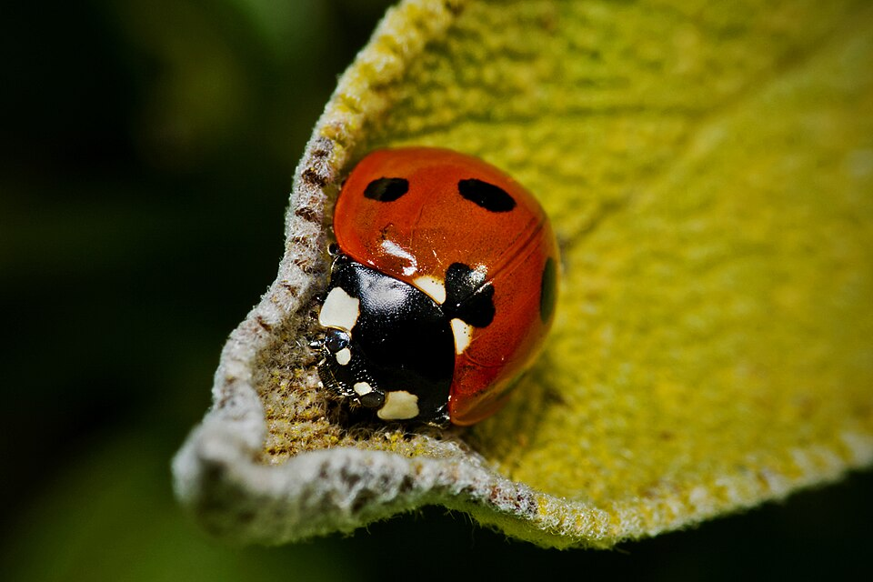
На фото семиточечная божья коровка.
Зачёт: Божья коровка
Достаточно фамилии или общеупотребительного названия.
File:Seven Spot Ladybird Coccinella septempunctata (16991590756).jpg
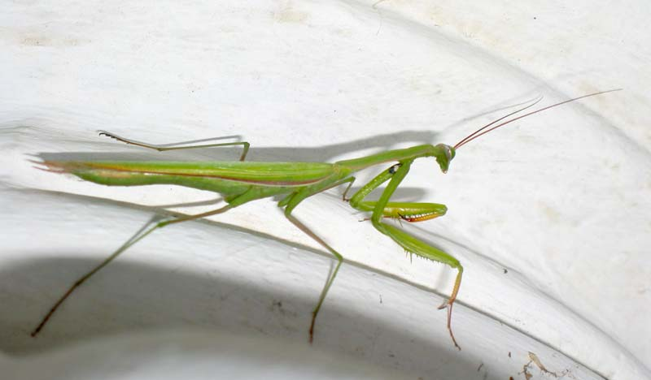
Характерные хватательные передние ноги напоминают молитвенную позу.
Зачёт: Богомол
Достаточно фамилии или общеупотребительного названия.

Крупные челюсти самца похожи на оленьи рога.
Зачёт: Жук-олень
Достаточно фамилии или общеупотребительного названия.
У светлячков свет вырабатывается в специальных органах.
Зачёт: Светлячки; Светляк; Светляки; Светлячок

На фото земляной шмель.
Зачёт: Шмель
Достаточно фамилии или общеупотребительного названия.
Название буквально описывает принцип работы.
Зачёт: Вибратор
Это специальная смазка.
Зачёт: Лубрикант; Смазка; Интимная смазка
Силиконы относятся к полимерным материалам.
Зачёт: Полимер
Дистанционное управление встречается и у телевизоров, и у взрослых гаджетов.
Зачёт: Пульт; Пульт управления
Название технологии пришло от прозвища короля Харальда Синезубого.
Зачёт: Bluetooth; Блютус
Это мать супруги.
Зачёт: Тёща
Не путать со свояченицей — сестрой жены.
Зачёт: Золовка
Так называется брат супруга.
Зачёт: Деверь
Да, у этого семейного персонажа есть отдельное слово.
Зачёт: Свояченица
Дети родных сестёр приходятся друг другу двоюродными братьями или сёстрами.
Зачёт: Двоюродные сёстры; Кузины; Двоюродные
Деревенская подписка на будильник.
Зачёт: Петух
Солома — в основном стебли зерновых после обмолота.
Зачёт: Сено
А человек, который ими занимается, — пчеловод.
Зачёт: Пасека
Земля образует гребень вокруг растения.
Зачёт: Окучивание
Важную роль в сохранении корма играет молочнокислое брожение.
Зачёт: Силос
Кольца связаны с объединением четырёх компаний в Auto Union.
Зачёт: Audi; Ауди
Чёрный гарцующий конь — символ марки.
Зачёт: Лошадь; Конь
Серийные автомобили Honda появились в 1963 году, позднее мотоциклов.
Зачёт: Мотоциклы
Volvo происходит от латинского глагола volvere.
Зачёт: Volvo; Вольво
Обе модели выпускает Toyota.
Зачёт: Toyota; Тойота
Влагалище — внутренний канал; наружные органы называют вульвой.
Зачёт: Вульва
В норме эмбрион имплантируется в слизистую оболочку матки.
Зачёт: Матка
Они также вырабатывают половые гормоны.
Зачёт: Яичники
Мочеиспускательный канал — отдельная структура, а не влагалище.
Зачёт: Уретра; Мочеиспускательный канал
Также употребляется название «фаллопиевы трубы». Они открываются в брюшную полость рядом с яичниками.
Зачёт: Маточные трубы; Фаллопиевы трубы; Яйцеводы
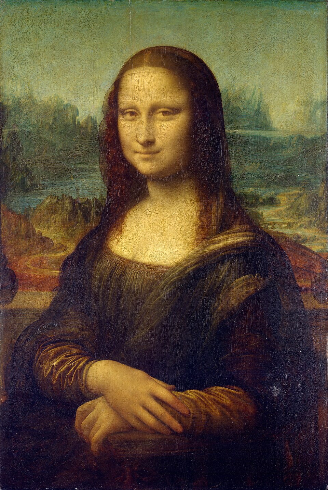
«Мона Лиза».
Зачёт: Леонардо да Винчи; Да Винчи; Леонардо
Достаточно фамилии или общеупотребительного названия.
File:Mona Lisa, by Leonardo da Vinci, from C2RMF retouched.jpg

«Звёздная ночь», 1889 год.
Зачёт: Винсент ван Гог; Ван Гог
Достаточно фамилии или общеупотребительного названия.

«Девушка с жемчужной серёжкой».
Зачёт: Ян Вермеер; Вермеер; Йоханнес Вермеер
Достаточно фамилии или общеупотребительного названия.

«Большая волна в Канагаве». Это гравюра.
Зачёт: Кацусика Хокусай; Хокусай
Достаточно фамилии или общеупотребительного названия.
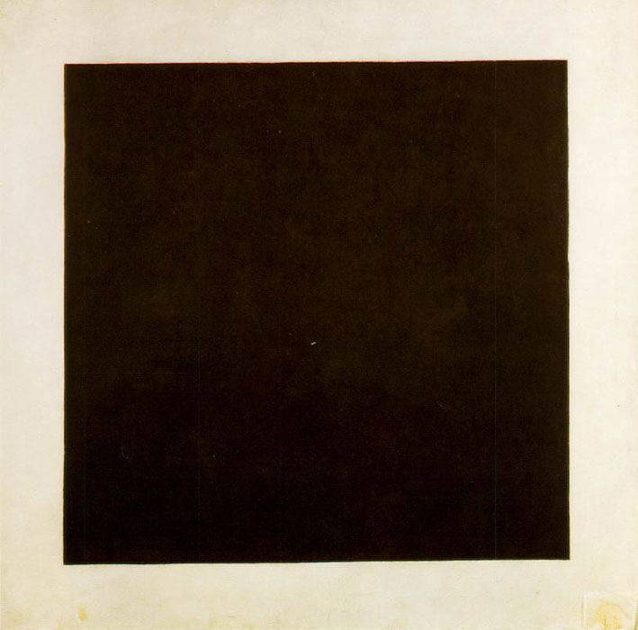
«Чёрный квадрат».
Зачёт: Казимир Малевич; Малевич
Достаточно фамилии или общеупотребительного названия.
История семьи Бриджертонов и брачного сезона.
Зачёт: Бриджертоны; Bridgerton
Сериал по роману Лианы Мориарти.
Зачёт: Большая маленькая ложь; Big Little Lies
В первом сезоне показаны три эпохи жизни одного особняка.
Зачёт: Почему женщины убивают; Why Women Kill
Речь об оригинальном сериале о подростках Верхнего Ист-Сайда.
Зачёт: Сплетница; Gossip Girl
Главную роль исполнила Джулианна Маргулис.
Зачёт: Хорошая жена; The Good Wife
Он вступил в должность в 1789 году.
Зачёт: Джордж Вашингтон; Вашингтон
Победы — 1932, 1936, 1940 и 1944 годы.
Зачёт: Франклин Рузвельт; Франклин Делано Рузвельт; Рузвельт
Вопрос об историческом результате выборов 1994 года.
Зачёт: Александр Лукашенко; Лукашенко
Она занимала пост с 1980 по 1996 год.
Зачёт: Исландия
Инаугурация состоялась 10 мая 1994 года.
Зачёт: Нельсон Мандела; Мандела
Секрет выделяется из специальных желёз.
Зачёт: Скунс
Его аромат — отдельное испытание для носа.
Зачёт: Дуриан
Ароматические масла содержатся в наружном окрашенном слое кожуры.
Зачёт: Из цедры; Цедра; Из наружного слоя кожуры; Из оранжевой части кожуры
Химическая формула — H₂S. По запаху нельзя надёжно оценивать его наличие: это опасный газ.
Зачёт: Сероводород; H2S
Некоторые люди описывают запах или вкус кинзы как мыльный.
Зачёт: Мыло; Мыльный запах

Это рамбутан, фрукт со съедобной мякотью.
Зачёт: Съедобно; Да
Достаточно сказать, съедобно это или нет.
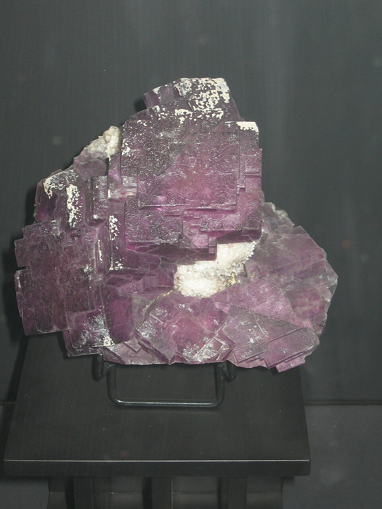
На фото флюорит, минерал.
Зачёт: Несъедобно; Нет
Достаточно сказать, съедобно это или нет.
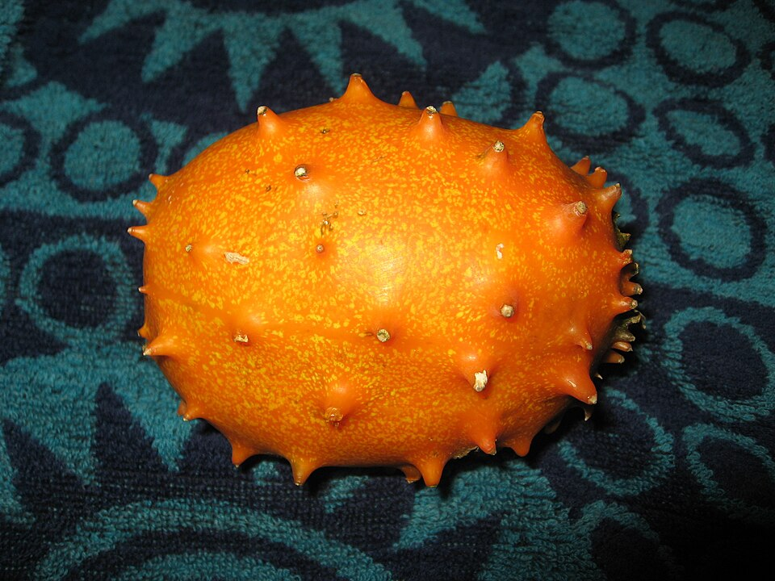
Это кивано, съедобный плод, который также называют рогатой дыней.
Зачёт: Съедобно; Да
Достаточно сказать, съедобно это или нет.

Это бомбочка для ванны, косметическое средство.
Зачёт: Несъедобно; Нет
Достаточно сказать, съедобно это или нет.

На фото карамбола. Поперечный срез этого фрукта напоминает звезду.
Зачёт: Съедобно; Да
Достаточно сказать, съедобно это или нет.
Публичный запуск ChatGPT состоялся в ноябре 2022 года.
Зачёт: OpenAI
Английское название — deepfake.
Зачёт: Дипфейк; Deepfake
Термин описывает недостоверное сгенерированное содержание, а не человеческое восприятие.
Зачёт: Галлюцинация
В статье 1950 года Тьюринг предложил «игру в имитацию».
Зачёт: Алана Тьюринга; Тьюринг; Тест Тьюринга
Полная расшифровка — Generative Pre-trained Transformer.
Зачёт: Transformer; Трансформер
Фраза прозвучала при старте «Востока-1» в 1961 году.
Зачёт: Юрий Гагарин; Гагарин
Латинская формула — Veni, vidi, vici.
Зачёт: Юлий Цезарь; Цезарь
Это произошло во время миссии Apollo 11 в 1969 году.
Зачёт: Нил Армстронг; Армстронг
Речь прозвучала во время Марша на Вашингтон.
Зачёт: Мартин Лютер Кинг; Мартин Лютер Кинг-младший; Кинг
В письме Максу Борну 1926 года Эйнштейн выражал своё отношение к вероятностному описанию квантовой физики.
Зачёт: Альберт Эйнштейн; Эйнштейн
Кофеин — стимулятор, содержащийся также в чае и других растениях.
Зачёт: Кофеин
Плацебо — имитация лечения, а эффект плацебо связывают в том числе с ожиданиями.
Зачёт: Эффект плацебо; Плацебо
Название связано со снотворным действием опиатов.
Зачёт: Морфей
Синдром отмены может возникать после прекращения приёма вещества.
Зачёт: Синдром отмены; Абстиненция; Абстинентный синдром; Ломка
Они взаимодействуют с опиоидными рецепторами. Это не означает, что их можно считать уличным наркотиком.
Зачёт: Эндорфины
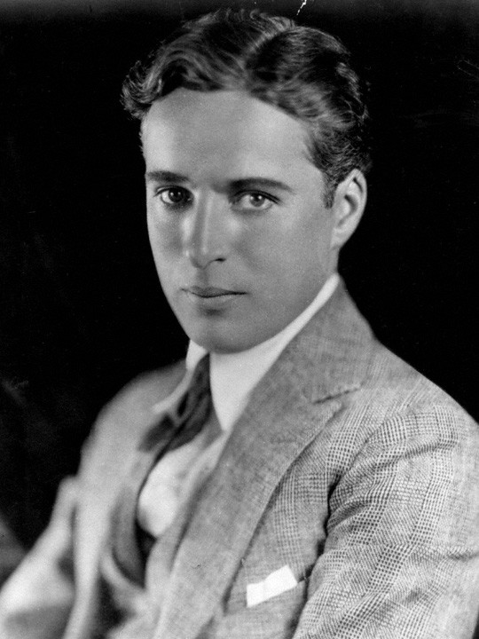
Это актёр и режиссёр Чарли Чаплин, а не осуждённый за убийство.
Зачёт: Нет — Чарли Чаплин; Нет
Оцениваем документированный приговор, а не внешность. После ответа назвать человека и пояснить биографию.
Банди был осуждён за убийства; казнён в 1989 году.
Зачёт: Да — Тед Банди; Да
Оцениваем документированный приговор, а не внешность. После ответа назвать человека и пояснить биографию.

Это первый человек в космосе Юрий Гагарин.
Зачёт: Нет — Юрий Гагарин; Нет
Оцениваем документированный приговор, а не внешность. После ответа назвать человека и пояснить биографию.

В 1980 году его признали виновным в 33 убийствах.
Зачёт: Да — Джон Уэйн Гейси; Да
Оцениваем документированный приговор, а не внешность. После ответа назвать человека и пояснить биографию.
В 1971 году осуждён за убийства и сговор; речь о судебной ответственности, а не утверждении, что он лично совершил каждое убийство.
Зачёт: Да — Чарльз Мэнсон; Да
Оцениваем документированный приговор, а не внешность. После ответа назвать человека и пояснить биографию.
Superior Court of California: Manson probate ruling, findings on convictions
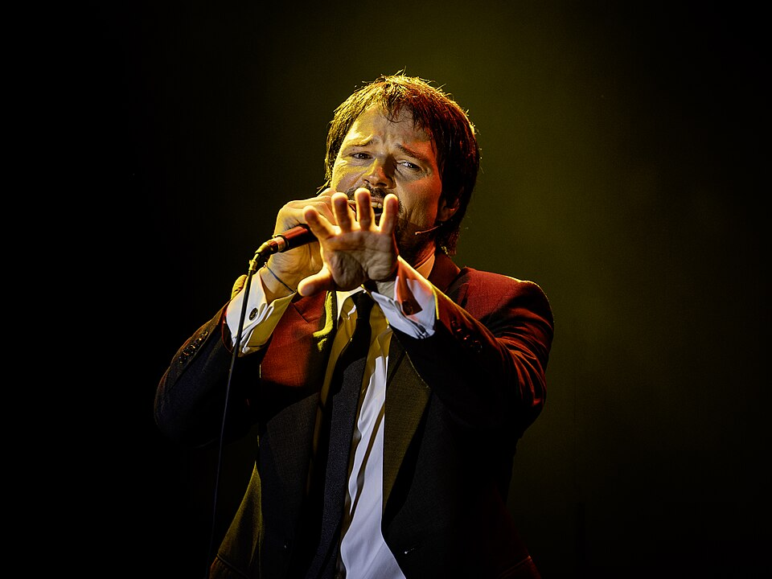
Актёр фильмов «Легенда № 17» и «Экипаж».
Зачёт: Данила Козловский; Козловский
Достаточно фамилии или общеупотребительного названия.
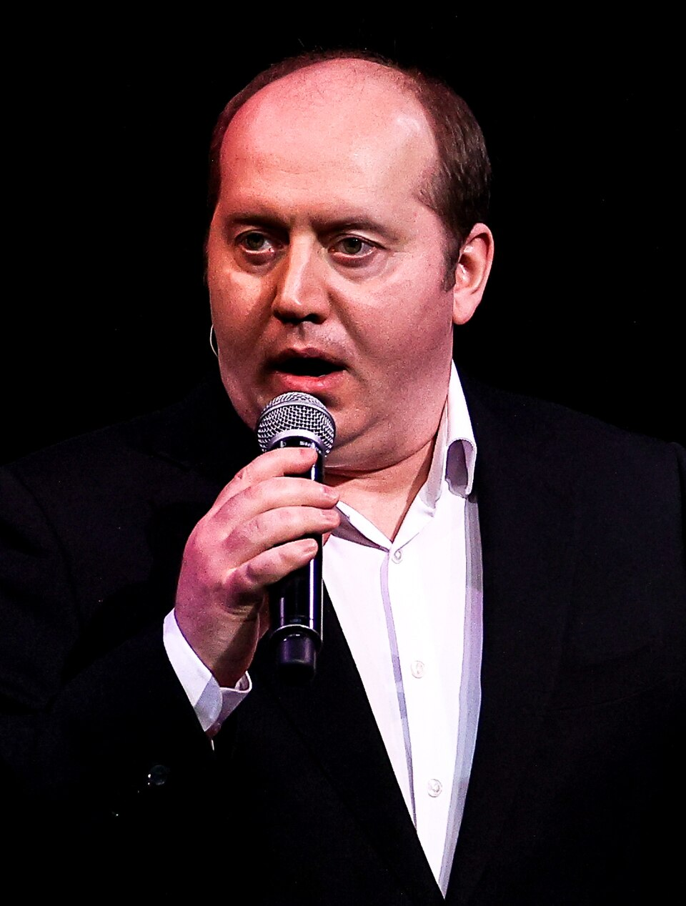
Актёр сериалов «Полицейский с Рублёвки» и «Ивановы-Ивановы».
Зачёт: Сергей Бурунов; Бурунов
Достаточно фамилии или общеупотребительного названия.
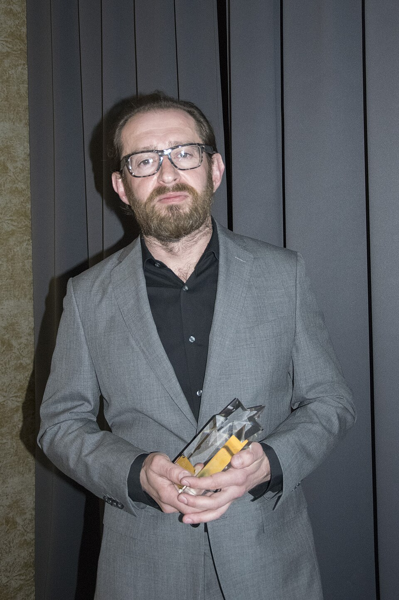
Актёр фильмов «Ночной дозор» и «Географ глобус пропил».
Зачёт: Константин Хабенский; Хабенский
Достаточно фамилии или общеупотребительного названия.
Актёр фильмов «Купе номер 6» и «Анора».
Зачёт: Юра Борисов; Юрий Борисов; Борисов
Достаточно фамилии или общеупотребительного названия.
File:Yura Borisov at the 2024 Toronto International Film Festival (Cropped).jpg
Актёр фильмов «Лёд» и «Текст».
Зачёт: Александр Петров; Петров
Достаточно фамилии или общеупотребительного названия.
Коньяк — виноградный дистиллят из определённого региона.
Зачёт: Виноград
Используют тростниковый сок или продукты переработки тростника, например мелассу.
Зачёт: Сахарный тростник; Тростник
В производстве участвуют рис, вода, кодзи и дрожжи.
Зачёт: Рис
Это агава, а не кактус.
Зачёт: Голубая агава; Агава
При хранении в бочках жидкость постепенно испаряется.
Зачёт: Часть напитка, испарившаяся при выдержке; Испарение; Испарившийся алкоголь
Площадка называется дохё.
Зачёт: Сумо
Его основал Дзигоро Кано.
Зачёт: Дзюдо
Современное тхэквондо сформировалось в Корее.
Зачёт: Корея; Южная Корея
Участники образуют круг — роду.
Зачёт: Капоэйра
В нём важны перенаправление движения соперника и контроль.
Зачёт: Айкидо
Она покрывает тело и образует защитный барьер.
Зачёт: Кожа
Количество может немного различаться из-за анатомических вариантов.
Зачёт: 206; Двести шесть
Обе кости входят в состав стопы.
Зачёт: В стопе; Стопа; В ступне; Ступня
При её сокращении увеличивается объём грудной полости.
Зачёт: Диафрагма
У неё есть экзокринная и эндокринная части.
Зачёт: Поджелудочная железа; Поджелудочная
Тираннозавры жили в конце мелового периода, задолго до Homo sapiens.
Зачёт: Тираннозавр; Динозавр
Его распад сформировал предшественников современных материков.
Зачёт: Пангея
Наземные растения существовали задолго до первых динозавров.
Зачёт: Растения на суше; Растения; Наземные растения
Морские окаменелости в таких осадочных породах указывают на древнюю морскую среду.
Зачёт: В море; На дне моря; На морском дне; В океане; Под водой
Ранние млекопитающие жили в одно время с динозаврами.
Зачёт: Млекопитающие; К млекопитающим; Млекопитающие животные
Таблица умножения не устаревает.
Зачёт: 56; Пятьдесят шесть
Кто совершил действие? Кот. Сосиска пострадала.
Зачёт: Кот
При сложении — сумма, при вычитании — разность, при умножении — произведение.
Зачёт: Частное
Квадрат и семёрки, и минус семёрки равен 49.
Зачёт: 7 и −7; Плюс-минус семь; -7 и 7
«Золотые руки» — устойчивое выражение о человеке, который многое умеет делать. Оно построено на переносном значении.
Зачёт: Метафора; Фразеологизм; Устойчивое выражение
Вопрос относится к сюжету Книги Бытия.
Зачёт: Ной
В арабской традиции название связано с чтением или декламацией.
Зачёт: Коран
Синагога также служит местом изучения и общинной жизни.
Зачёт: Синагога
Также переводят как «просветлённый».
Зачёт: Пробуждённый; Просветлённый
Тримурти объединяет функции творения, сохранения и разрушения.
Зачёт: Индуизм
Снюс — табачный продукт; никотиновые паучи без табачного листа — другая категория.
Зачёт: Табачный лист; Табак
Отсутствие табачного листа не означает отсутствия никотина.
Зачёт: Никотин
Также подходят «пакетик» и «саше».
Зачёт: Мешочек; Пакетик; Саше
Отсек позволяет временно убрать использованный пакетик отдельно от новых.
Зачёт: Для использованных пакетиков; Для использованных паучей; Для мусора; Для использованного снюса
По маркировке 6 × 20 = 120 мг.
Зачёт: 120 мг; 120; Сто двадцать миллиграммов
Оба предмета имеют массу один килограмм.
Зачёт: Масса одинаковая; Одинаково; Равны; Ни у чего
Обычный железный предмет проявляет ферромагнитные свойства.
Зачёт: Железо
Уточнение температуры важно: нейтральное значение зависит от неё.
Зачёт: 7; Семь
Обозначение — Н, международное — N.
Зачёт: Ньютоны; Ньютон
Русский синоним — возгонка.
Зачёт: Сублимация; Возгонка
Оригинальное название — Lost.
Зачёт: Остаться в живых; Lost; Лост
Оригинальное название — Prison Break.
Зачёт: Побег; Prison Break
Грегори Хауса сыграл Хью Лори.
Зачёт: Доктор Хаус; Хаус; House
Оригинальный слоган — Save the cheerleader, save the world.
Зачёт: Герои; Heroes
Премьера Scrubs состоялась в 2001 году.
Зачёт: Клиника; Scrubs
Главную роль играет Дженна Ортега.
Зачёт: Уэнсдей; Wednesday
Корейский сериал Netflix.
Зачёт: Игра в кальмара; Squid Game
В оригинале — Severance.
Зачёт: Разделение; Severance
Оригинальное название — The Pitt; каждый эпизод соответствует примерно часу смены.
Зачёт: Больница Питт; The Pitt; Питт
Оригинальное название — Pluribus.
Зачёт: Одна из многих; Pluribus; Плюрибус
Lobe означает «мочка».
Зачёт: Lobe; Лоб; Лоуб
Такое украшение также называют пусетой.
Зачёт: Гвоздик; Серьга-гвоздик; Пусета; Пусет
Название происходит от латинского septum — перегородка.
Зачёт: Септум; Septum
Украшение такой формы часто называют подковой.
Зачёт: Подкова
Прокол проходит в области переносицы.
Зачёт: На переносице; Переносица; Между глазами; В верхней части переносицы
Теория относительности; Нобелевская премия за объяснение фотоэффекта.
Зачёт: Альберт Эйнштейн; Эйнштейн
Достаточно фамилии или общеупотребительного названия.
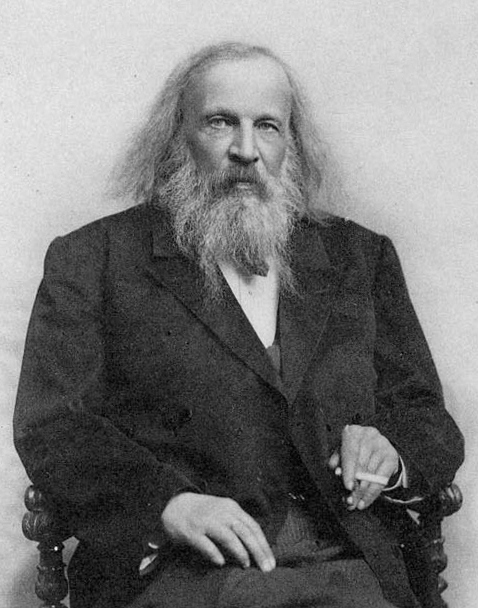
Создатель периодической системы химических элементов.
Зачёт: Дмитрий Менделеев; Менделеев
Достаточно фамилии или общеупотребительного названия.
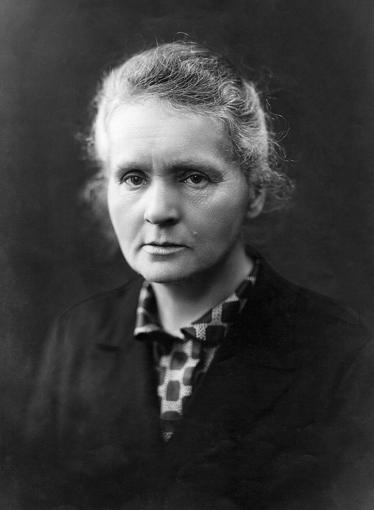
Исследовательница радиоактивности, лауреат двух Нобелевских премий.
Зачёт: Мария Склодовская-Кюри; Мария Кюри; Мари Кюри; Кюри
Достаточно фамилии или общеупотребительного названия.
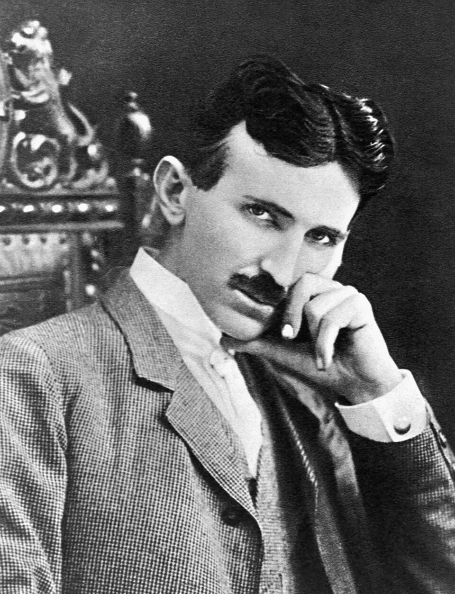
Изобретатель, работавший над системами переменного тока.
Зачёт: Никола Тесла; Тесла
Достаточно фамилии или общеупотребительного названия.
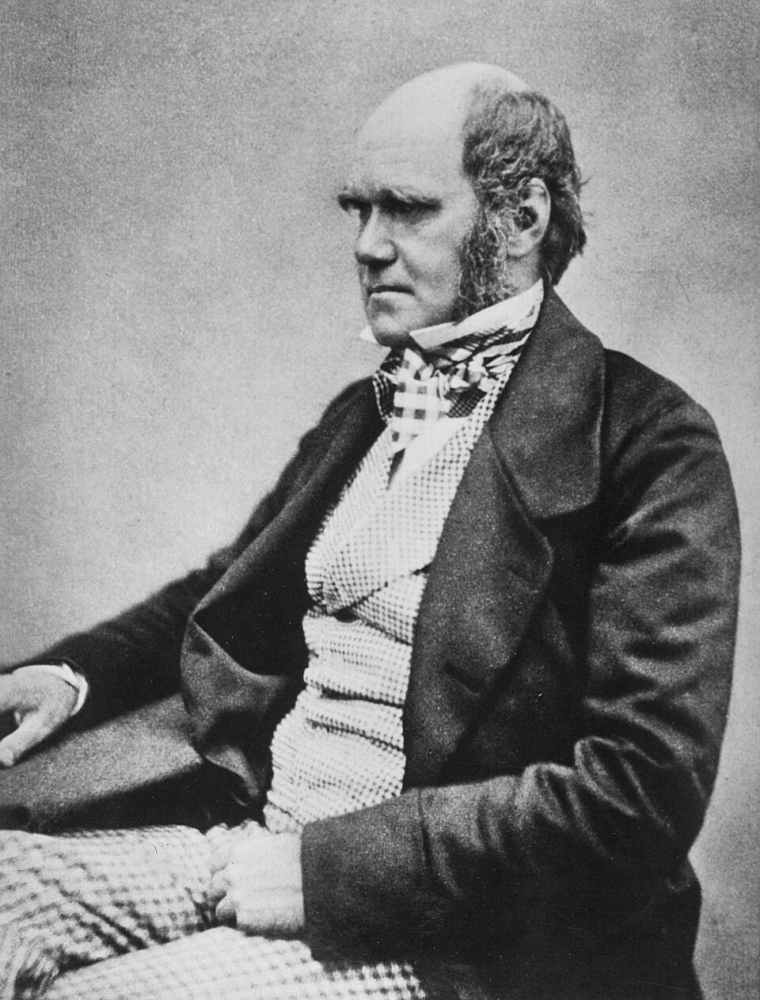
Автор «Происхождения видов».
Зачёт: Чарльз Дарвин; Дарвин
Достаточно фамилии или общеупотребительного названия.